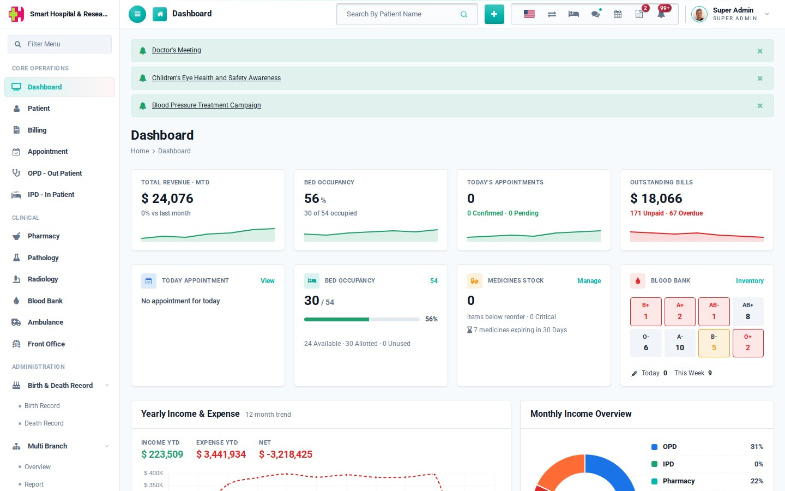
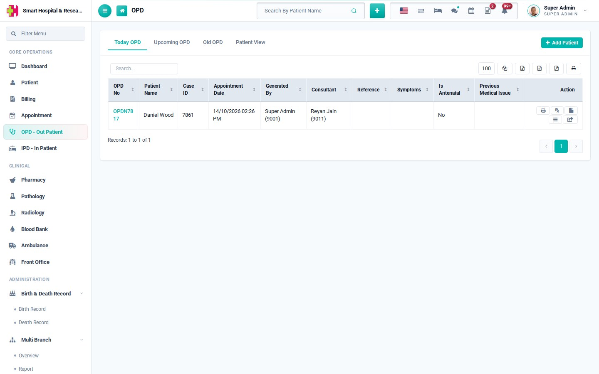
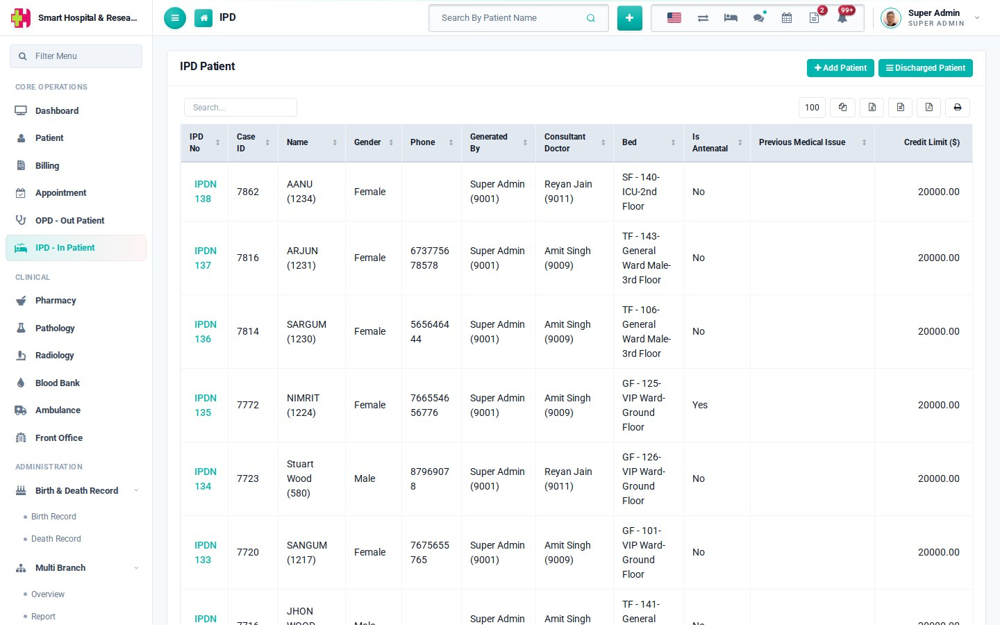
How this guide is organised
Task-oriented help: how to run every module, day to day.
Practical, task-oriented help for the Smart Hospital hospital-management system (
demo.smart-hospital.in). Written from a live exploration of the demo hospital Smart Hospital & Research Center — every workflow below was performed against the running application. Screenshots are indocs/assets/screens/; the screen-by-screen reference is inFEATURE-CATALOG.md.
| Portal | URL | Who uses it |
|---|---|---|
| Admin panel | /site/login |
All hospital staff (9 roles) |
| Patient portal | /site/userlogin |
Patients (self-service) |
| Public website | / |
Visitors, prospective patients |
/site/login./site/forgotpassword (patient portal: /site/ufpassword).On the demo build the login page also offers Quick demo login buttons that fill the credentials for each role.
| Role | Demo user | Password |
|---|---|---|
| Super Admin | superadmin@gmail.com |
password |
| Admin | jason@gmail.com |
password |
| Doctor | sonia@gmail.com |
password |
| Pharmacist | harry@gmail.com |
password |
| Pathologist | belinat@gmail.com |
password |
| Radiologist | johnhook@gmail.com |
password |
| Accountant | bradf@gmail.com |
password |
| Receptionist | maria@gmail.com |
password |
| Nurse | april@gmail.com |
password |
The dashboard is role-aware. For a Super Admin it shows:
Recommended order — later modules depend on earlier masters:
/schsettings) — hospital name, logo, address, contact, currency, date format, time zone, session timeout./admin/charges) — the charge catalogue used by billing, OPD and IPD (consultation, procedure, room, investigation, etc.)./admin/setup/bed/status) — wards, bed groups and individual beds; drives admission and the bed-status board./admin/printing) — per-module header/footer used on bills, reports, prescriptions, certificates./admin/incomehead) — income and expense heads./admin/visitorspurpose) — visitor purposes, call log types, complaint types./admin/operationtheatre/index) — operation theatre master./admin/medicinecategory/medicine) — medicine categories, units, suppliers and medicines./admin/pathologycategory/addcategory) — test categories and tests (with parameters, ranges, units)./admin/lab/addlab) — imaging categories and studies./admin/bloodbank/products) — components, bag types and stock./admin/zoom_conference) if you will use teleconsultation./admin/front/page) to publish the public website.Tip — Most masters are ordinary list screens: DataTables search, an Add button opening a modal, row actions for edit/delete, and CSV/print export.
Patient → Patient List (/admin/admin/search) → Add New Patient (or Quick Add → Add Patient).
Capture at minimum: name, guardian name, gender, date of birth/age, mobile, e-mail, address, blood group, marital status, photo and (optionally) TPA/insurance details. The system assigns the patient ID (MR number) that every other module uses.

Appointment (/admin/appointment/index) with tabs Today, Upcoming, Old.
/admin/onlineappointment/index); the Doctor Wise view shows a doctor's day.
OPD – Out Patient (/admin/patient/search) with tabs Today OPD, Upcoming OPD, Old OPD, Patient View.

IPD – In Patient (/admin/patient/ipdsearch).

Billing (/admin/bill/dashboard).

Front Office (/admin/visitors) — four registers:
Purpose lists and call/complaint types are configured in Setup → Front Office (/admin/visitorspurpose).
Pharmacy (/admin/pharmacy/bill) is the point of sale and store control.
Pathology (/admin/pathology/gettestreportbatch).
Radiology (/admin/radio/gettestreportbatch) — same order → schedule → perform → report flow, with findings/impression text and attachments. Reports print in batch like pathology.
Blood Bank (/admin/bloodbankstatus/).
Ambulance (/admin/vehicle/getcallambulance) — vehicle and driver master, call register (caller, patient, pickup address, date/time), charge for the trip and status (pending → dispatched → completed).
Human Resource (/admin/staff) — staff directory with Staff ID, name, role, department, designation, mobile, photo.
QR Code Attendance → Attendance (/admin/qrattendance/attendance/index) shows the monthly register (present/absent/half-day/late, in and out time).
/admin/qrattendance/setting/index) configures the QR/check-in window and rules; staff scan the hospital QR to mark attendance./admin/dutyroster/roster_report) — assign shifts (morning/evening/night) per staff and department, per day; export/print the roster./admin/holiday/index) — holidays, events and (per vendor help) to-do items.Birth Record (/admin/birthordeath) and Death Record (/admin/birthordeath/death) capture the statutory fields (child/parent details, hospital, doctor, certificate number) and print certificates. Both feed the Birth Death report.
Referral (/admin/referral/payment) — referral doctor/agent master, commission percentage per service (Setup → Referral), and the ledger of commission payable/paid per referred case.
TPA Management (/admin/tpamanagement) — insurance companies, TPA master, patient policies and claim status tracking; TPA payments appear in the TPA report and in billing as a payment mode.
/admin/income) and Expenses (/admin/expense) — head-wise entries with date, amount, invoice/reference, remark and attachment./admin/incomehead).Multi Branch has three screens:
/admin/multibranch/branch/overview) — group KPIs per branch (patients, collections, beds) side by side./admin/multibranch/branch/report) — comparative reporting across branches./admin/multibranch/branch) — the branch master (name, code, address, contact, admin) plus the branch switcher in the header.
Messaging (/admin/notification) — publish notices to selected audiences (roles, staff, patients, branch) with title, message, date, attachment and publish/expiry window. Recipients see them in the bell menu.
Notifications are event driven. For each event (for example OPD Patient Registration, IPD Patient Discharge, Appointment Approved, Login Credentials) you choose which channels deliver it:
| Channel | Where it is configured | Notes |
|---|---|---|
| System / in-app | System Settings → Notification Setting | Bell menu + notice board |
| Email Setting (SMTP credentials) | Used for credentials and reports | |
| SMS | SMS Setting (gateway credentials) | Charged per message by the gateway |
| WhatsApp Messaging → Meta (Cloud API) or Twilio | One provider at a time; the template configured for the event is used | |
| Mobile app push | Android app integration | Free channel for installed patients/staff |
WhatsApp setup — open WhatsApp Messaging, choose the Meta tab (official WhatsApp Business Cloud API) or the Twilio tab (sandbox or approved sender), enter the credentials, enable exactly one provider, then switch WhatsApp on per event on the Notification Setting page. The same event template that already goes out by e-mail/SMS is reused. Mirror:
docs/help-library/whatsapp-messaging/.
Patient credentials can be sent from the patient record over any enabled channel (e-mail/SMS/WhatsApp/push), which is how patients get access to the patient panel (see §8).
Survey Forms (/admin/survey) — build questionnaires (question types: text, textarea, radio, checkbox, dropdown, date, rating), publish them to selected roles/departments and read responses. My Survey Forms (/admin/survey/staff_forms) is the staff-facing list of forms assigned to the signed-in user.
Download Center (/admin/content/upload, /admin/content/list, /admin/contenttype/) — content types, upload/share files (reports, circulars, policies) with audience and download counters.
/admin/generatecertificate) — choose module (OPD/IPD), discharged patients and a certificate template; generate single or multiple at once and print./admin/generatepatientidcard/) and Staff ID Card (/admin/generatestaffidcard/) — template-based cards with photo, ID and validity.Inventory (/admin/itemstock) — item categories (Setup → Inventory), suppliers, item master, issue/return to departments, stock ledger and reorder alerts; Inventory report shows consumption.
Front CMS (/admin/front/page) manages the public site: pages, banners/sliders, news & events, gallery, departments, doctors, contact and SEO metadata. Content published here appears on the hospital website and in the "What's new" block of the login page.
/admin/zoom_conference/consult) — schedule a Zoom teleconsultation for a patient, share the join link, start/end the session; the call is logged for reporting./admin/zoom_conference/meeting) — internal staff meetings with participants and schedule./admin/zoom_conference).Reports menu (17 report screens in the admin UI). Every report shares the same pattern: date range + module-specific filters → Search → results table → export/print.
The vendor help library documents 44 report articles (per-report how-tos such as Daily Transaction Report, Stock Report, Balance Amount Report, Pathology/Radiology Balance Report). They are mirrored under
docs/help-library/reports/and indexed indocs/HELP-LIBRARY.md.
| Report | What you get |
|---|---|
| Finance | Collections, income vs expense, payment-mode wise summary |
| Appointment | Bookings by period, doctor, status |
| OPD | Visit counts, diagnosis mix, doctor-wise load |
| IPD | Admissions, discharges, bed-days, ward-wise census |
| Pharmacy | Sales, stock movement, expiry/bad stock, profit |
| Pathology | Test-wise counts, revenue, pending vs reported |
| Radiology | Study counts and revenue |
| Blood Bank | Donations, issues, component stock |
| Ambulance | Calls, trips, revenue |
| Birth Death | Birth and death register extracts |
| Human Resource | Staff list, attendance, leaves, payroll |
| TPA | Claim-wise and company-wise settlement status |
| Inventory | Item consumption and stock valuation |
| Live Consultation | Teleconsultation log and duration |
| OT | Operation theatre utilisation and procedures |
| Patient | Patient demographics and registration trend |
| Log | System audit trail (user, module, action, record, time) |

/site/userlogin) — patients sign in with the credentials sent from the patient record and get their own dashboard (counts per module plus charts of medical history, findings and symptoms). Sections available to the patient:docs/help-library/patient-panel/.docs/help-library/changelog/ and backlog E13 for mobile coverage.The product ships a Two Factor Authentication module (Google Authenticator / TOTP):
Mirror:
docs/help-library/two-factor-authentication/. Recommendation for DiziHospital: enforce 2FA for every role that can reach billing or clinical records (backlog E4).
| Symptom | What to check |
|---|---|
| Cannot log in / login URL missing | Correct portal (/site/login vs /site/userlogin); see vendor article Unable to Login or Missing Login URL. |
| A menu item is missing for a user | Their role does not include that permission — adjust the role/staff record. |
| Blank page or 500 error | ONLY_FULL_GROUP_BY SQL mode on the MySQL server (vendor article), or missing PHP extensions (mysqli, mbstring, zip, curl). |
| "404 / Page not found" after installation | mod_rewrite disabled or .htaccess missing (vendor article 404 Or Page Not Found Error In Installation). |
| Reports return no rows | Date range, branch filter and module status filters are cumulative — widen the range first. |
| Stock not decreasing in pharmacy | The bill must be paid/saved, not merely drafted; bad/expired stock uses the Bad Stock entry. |
| Lab report not printable | Results must be approved/verified before the report can be generated. |
| Patient portal shows no investigations | Reports are visible to the patient only after they are released/approved. |
| Slow pages | Enable caching/CDN, check server resources; PHP max_execution_time ≥ 60s is recommended by the vendor. |
| Need a field that does not exist | Add it non-invasively through Setup → Custom Fields. |
Frequently asked (vendor articles, for depth): multi-hospital usage, running on a local LAN without internet, moving to a new server, enabling SSL, special characters, adding calendar events and to-dos, chat contacts.
| Term | Meaning |
|---|---|
| OPD | Out-Patient Department — walk-in/consultation visits |
| IPD | In-Patient Department — admitted patients |
| MR / Patient ID | Master record number identifying a patient across modules |
| Case ID | The episode identifier linking OPD/IPD visits, orders and bills |
| TPA | Third-Party Administrator handling insurance claims |
| ICD-10 | International Classification of Diseases, 10th revision — diagnosis coding |
| Charge master | Catalogue of billable items and prices |
| Bad stock | Expired/damaged medicine stock written off |
| Roster | Duty/shift plan per staff member |
| Vitals | Temperature, pulse, blood pressure, respiration, SpO₂, BMI |
| Sample collection | Pathology step between ordering a test and entering results |
| Batch | A specific lot of a medicine identified by batch number and expiry |
| MRP / Sale price | Maximum retail price / the price charged to the patient |
| QR attendance | Staff attendance marked by scanning a QR code |
Every screen, every form, every field — captured from the live application.
Evidence-based product documentation, generated from a live screen-by-screen exploration of the Smart Hospital hospital-management system (by QDOCS) running at
demo.smart-hospital.in.Captured on 2026-10-13: 76 application screens, 96 data-entry dialogs, 2 record/tab views, 9 role dashboards and the public website.
| Product | Smart Hospital — Hospital Management System |
| Vendor | QDOCS · https://www.smart-hospital.in |
| Explored instance | https://demo.smart-hospital.in (Smart Hospital & Research Center) |
| Sign-in used | superadmin@gmail.com / password (plus all nine demo roles) |
| Technology (vendor docs) | PHP (CodeIgniter MVC) + MySQL · Bootstrap · jQuery/DataTables · Chart.js (server-rendered views) |
| Navigation | 5 sections → 30 menu items → 76 screens |
| Roles | Super Admin, Admin, Doctor, Nurse, Pharmacist, Pathologist, Radiologist, Accountant, Receptionist + Patient portal |
Companion documents
| File | Contents |
|---|---|
docs/WIKI.md |
Operator handbook — how to run every module, role by role |
docs/Smart-Hospital-Complete-Guide.pdf |
Printable guide: wiki + this catalogue + screenshots + backlog |
docs/IMPROVEMENT-BACKLOG.md |
Findings and the prioritised improvement backlog for the next phase |
docs/COVERAGE.md |
Exactly what was captured, how, and what is out of scope |
capture/ |
Raw evidence: screenshots, DOM profiles, role menu trees, logs |
Smart Hospital
├── CORE OPERATIONS
│ ├── Dashboard
│ ├── Patient
│ ├── Billing
│ ├── Appointment
│ ├── OPD - Out Patient
│ ├── IPD - In Patient
├── CLINICAL
│ ├── Pharmacy
│ ├── Pathology
│ ├── Radiology
│ ├── Blood Bank
│ ├── Ambulance
│ ├── Front Office
├── ADMINISTRATION
│ ├── Birth & Death Record › Birth Record
│ ├── Birth & Death Record › Death Record
│ ├── Multi Branch › Overview
│ ├── Multi Branch › Report
│ ├── Multi Branch › Settings
│ ├── Human Resource
│ ├── QR Code Attendance › Attendance
│ ├── QR Code Attendance › Settings
│ ├── Duty Roster
│ ├── Annual Calendar
│ ├── Referral
│ ├── TPA Management
│ ├── Finance › Income
│ ├── Finance › Expenses
├── TOOLS & CONTENT
│ ├── Survey Forms › Survey Forms
│ ├── Survey Forms › My Survey Forms
│ ├── Messaging
│ ├── Inventory
│ ├── Download Center › Upload /Share Content
│ ├── Download Center › Content Share List
│ ├── Download Center › Content Type
│ ├── Certificate › Certificate
│ ├── Certificate › Patient ID Card
│ ├── Certificate › Staff ID Card
│ ├── Front CMS
│ ├── Live Consultation › Live Consultation
│ ├── Live Consultation › Live Meeting
├── REPORTS & SETUP
│ ├── Reports › Finance
│ ├── Reports › Appointment
│ ├── Reports › OPD
│ ├── Reports › IPD
│ ├── Reports › Pharmacy
│ ├── Reports › Pathology
│ ├── Reports › Radiology
│ ├── Reports › Blood Bank
│ ├── Reports › Ambulance
│ ├── Reports › Birth Death
│ ├── Reports › Human Resource
│ ├── Reports › TPA
│ ├── Reports › Inventory
│ ├── Reports › Live Consultation
│ ├── Reports › Log
│ ├── Reports › OT
│ ├── Reports › Patient
│ ├── Setup › Hospital Charges
│ ├── Setup › Bed
│ ├── Setup › Print Header Footer
│ ├── Setup › Front Office
│ ├── Setup › Operations
│ ├── Setup › Pharmacy
│ ├── Setup › Pathology
│ ├── Setup › Radiology
│ ├── Setup › Blood Bank
│ ├── Setup › Symptoms
│ ├── Setup › ICD-10
│ ├── Setup › Findings
│ ├── Setup › Vitals
│ ├── Setup › Zoom Setting
│ ├── Setup › Finance
│ ├── Setup › Human Resource
│ ├── Setup › Referral
│ ├── Setup › Appointment
│ ├── Setup › Inventory
│ ├── Setup › Custom Fields
└── Public website (Front CMS) + Patient portal
Every screen sits inside the same shell:
| Section | Screens | Modules |
|---|---|---|
| Core Operations | 6 | Appointment, Billing, Dashboard, IPD - In Patient, OPD - Out Patient, Patient |
| Clinical | 6 | Ambulance, Blood Bank, Front Office, Pathology, Pharmacy, Radiology |
| Administration | 14 | Annual Calendar, Birth & Death Record, Duty Roster, Finance, Human Resource, Multi Branch, QR Code Attendance, Referral, TPA Management |
| Tools & Content | 13 | Certificate, Download Center, Front CMS, Inventory, Live Consultation, Messaging, Survey Forms |
| Reports & Setup | 37 | Reports, Setup |
Day-to-day desk work: the dashboard, the master patient index, billing, appointments and the OPD/IPD clinical desks.
Key capabilities
| # | Screen | What it covers | Path |
|---|---|---|---|
| 1 | Dashboard | Role-aware landing page: KPI tiles (revenue MTD, bed occupancy, appointments, outstanding bills, medicine stock, blood-bank stock), a 12-month income-vs-expense trend, a module-wise income donut, the latest activity feed, staff attendance and module income table. | /admin/admin/dashboard |
| 2 | Patient List | Master patient index. Search, add or import patients, view disabled patients, open the full patient profile and jump straight into a bill. | /admin/admin/search |
| 3 | Single Module Billing | Billing workbench: single-module billing and OPD/IPD billing through a case ID, part payments, payment modes, discounting and printable receipts. | /admin/bill/dashboard |
| 4 | Appointment | Appointment desk with Today / Upcoming / Old tabs, doctor-wise and queue views, slot validation and online-appointment handling. | /admin/appointment/index |
| 5 | OPD - Out Patient | OPD desk: Today / Upcoming / Old visit lists plus the "New Visit" workflow (symptoms, ICD-10, prescription, investigations, charges) and the patient view. | /admin/patient/search |
| 6 | IPD Patient | IPD desk: admission, bed/ward allocation, consultant assignment, daily notes, medication, investigations, charges and discharge. | /admin/patient/ipdsearch |
/admin/admin/dashboard/admin/admin/searchName * (text); Guardian Name (text); Phone (text); Gender (select) — Male, Female; Date Of Birth (text); Year (text); Month (text); Day (text); Blood Group (select) — B+, A+, AB-, AB+, O-, A-; Marital Status (select) — Single, Married, Widowed, Separated, Not Specified; Email (text); Address (input); National Identification Number (input); file (file); Remarks (textarea); Any Known Allergies (textarea); TPA (select) — Medi life2, Medicare TPA Services (India), Family Health Plan (FHPL), Raksha Health Insurance, Paramount Health Services, LIFE MEDICAL INSURANCE; TPA ID (input); TPA Validity (input)Name * (text); Guardian Name (text); Phone (text); Gender (select) — Male, Female; Date Of Birth (text); Year (text); Month (text); Day (text); Blood Group (select) — B+, A+, AB-, AB+, O-, A-; Marital Status (select) — Single, Married, Widowed, Separated, Not Specified; Email (text); Address (input); National Identification Number (input); file (file); Remarks (textarea); Any Known Allergies (textarea); TPA (select) — Medi life2, Medicare TPA Services (India), Family Health Plan (FHPL), Raksha Health Insurance, Paramount Health Services, LIFE MEDICAL INSURANCE; TPA ID (input); TPA Validity (input); Alternate Number (text)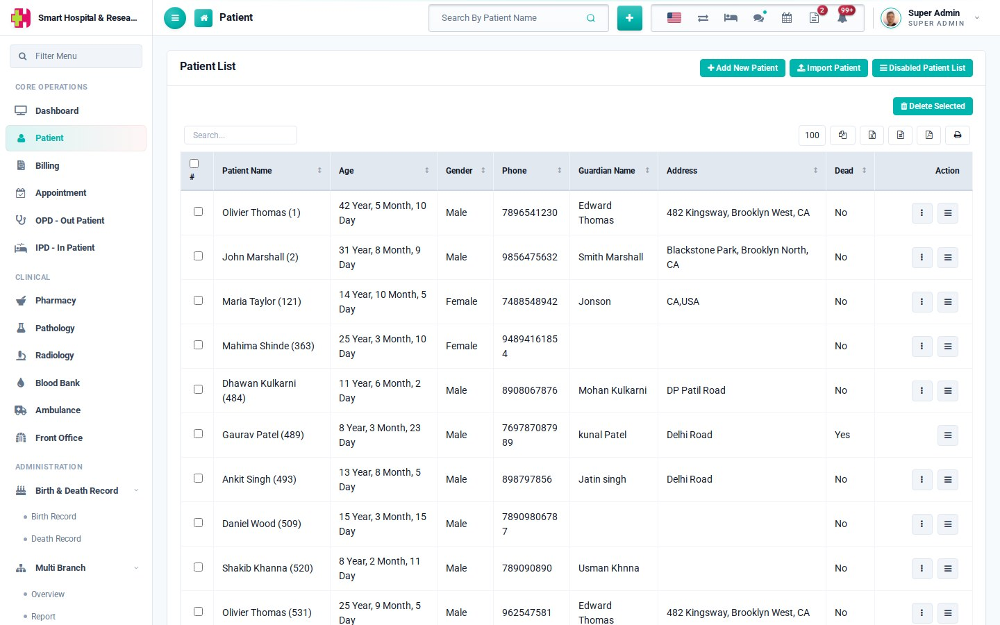
/admin/bill/dashboard/admin/bill/dashboard): Case ID (text)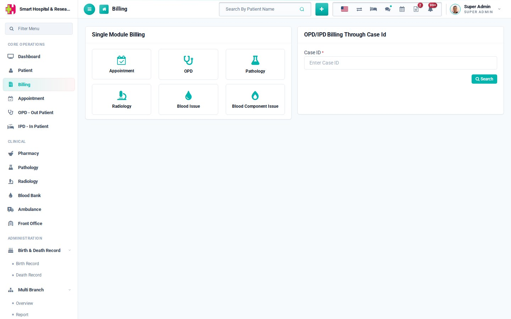
/admin/appointment/indexpatient_id (select); Doctor (select) — Amit Singh (9009), Reyan Jain (9011), Sansa Gomez (9008), Sonia Bush (9002); Doctor Fees ($) (text); Shift (select); Appointment Date (text); Slot (select); Appointment Priority (select) — Normal, Urgent, Very Urgent, Low; Status * (select) — Pending, Approved, Cancel; Discount Percentage (text); Live Consultant (On Video Conference) (select) — No, Yes; Payment Mode (select) — Cash, Cheque, Transfer to Bank Account, UPI, Online, Other; Message (textarea); Cheque No (text); Cheque Date (text); document (file); Alternate Address (textarea)Doctor (select) — Amit Singh (9009), Reyan Jain (9011), Sansa Gomez (9008), Sonia Bush (9002); Doctor Fees ($) (text); Shift (select); Appointment Date (text); Slot (select); Appointment Priority (select) — Normal, Urgent, Very Urgent, Low; Discount Percentage (text); Status * (select) — Pending, Approved, Cancel; Live Consultant (On Video Conference) (select) — No, Yes; Message (textarea)Name * (text); Guardian Name (text); Phone (text); Gender (select) — Male, Female; Date Of Birth (text); Year (text); Month (text); Day (text); Blood Group (select) — B+, A+, AB-, AB+, O-, A-; Marital Status (select) — Single, Married, Widowed, Separated, Not Specified; Email (text); Address (input); National Identification Number (input); file (file); Remarks (textarea); Any Known Allergies (textarea); TPA (select) — Medi life2, Medicare TPA Services (India), Family Health Plan (FHPL), Raksha Health Insurance, Paramount Health Services, LIFE MEDICAL INSURANCE; TPA ID (input); TPA Validity (input); Alternate Number (text)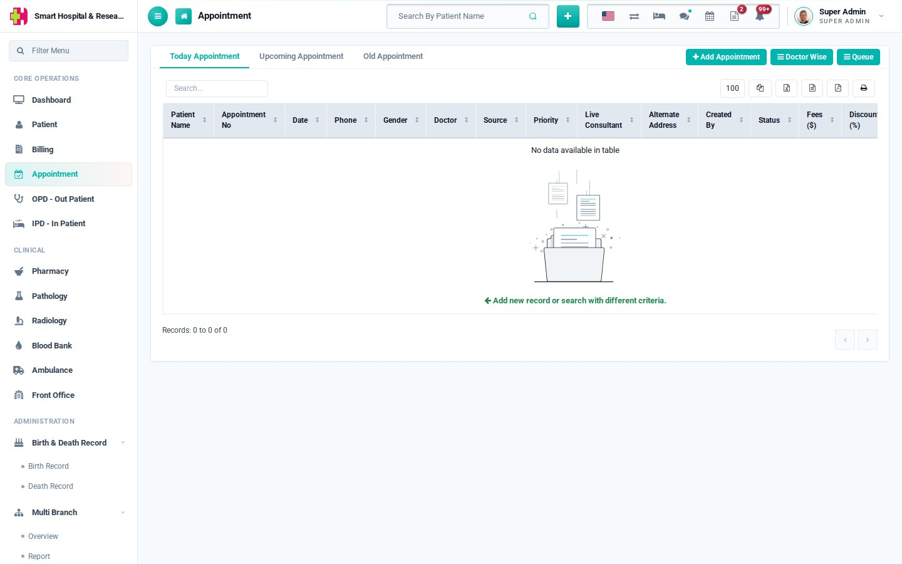
/admin/patient/search/admin/patient): field (select); symptoms_type (select) — Eating or weight problems, Emotional problems, Muscle or joint problems, Skin problems, Bladder problems, Stomach problems; field (text); Symptoms Description (textarea); ICD Group (select) — Select Group, Infectious & Parasitic Diseases, Infectious Diseases, Mental & Behavioural Disorders, Neoplasms, Viral Diseases; ICD-10 Diagnosis (select) — [A09] Infectious Gastroenteritis, [A15.0] Pulmonary Tuberculosis, [B34.9] Viral Infection, Unspecified, [C50.9] Malignant Neoplasm of Breast, [F41.1] Generalized Anxiety Disorder; Note (textarea); Any Known Allergies (textarea); Previous Medical Issue (textarea); Appointment Date * (text); case (text); casualty (select) — No, Yes; old_patient (select) — No, Yes; refference (text); Apply TPA (checkbox); consultant_doctor (select) — Amit Singh (9009), Reyan Jain (9011), Sansa Gomez (9008), Sonia Bush (9002); Charge Category (select) — OPD Consultation Fees, OPD Service, OPD Insurance, Blood pressure check, Eye check, Cholesterol level check; Charge * (select); Standard Charge ($) (text); Applied Charge ($) * (text); discount_percentage (text); percentage (text); … +8 moreName (text); Guardian Name (text); Gender (select) — Male, Female; Marital Status (select) — Single, Married, Widowed, Separated, Not Specified; file (file); Any Known Allergies (text); Phone (text); Blood Group (select) — B+, A+, AB-, AB+, O-, A-; Age (text); Month (text)Symptoms Type (select) — Eating or weight problems, Emotional problems, Muscle or joint problems, Skin problems, Bladder problems, Stomach problems; field (text); Symptoms Description (textarea); Note (textarea); Any Known Allergies (textarea); Appointment Date (text); Case (text); Casualty (select) — No, Yes; Old Patient (select) — No, Yes; Reference (text); Consultant Doctor (select) — Amit Singh (9009), Reyan Jain (9011), Sansa Gomez (9008), Sonia Bush (9002); Payment Date (text); Amount ($) (text); Payment Mode (select) — Cash, Cheque, Transfer to Bank Account, UPI, Online, Other; Payment Note (text); Cheque No (text); Cheque Date (text); document (file); is_for_antenatal (checkbox)/admin/patient/ipdsearch/admin/patient/add_inpatient): field (select); Symptoms Type (select) — Eating or weight problems, Emotional problems, Muscle or joint problems, Skin problems, Bladder problems, Stomach problems; Select (text); Symptoms Description (textarea); ICD-10 Groups (select) — Select Group, Infectious & Parasitic Diseases, Infectious Diseases, Mental & Behavioural Disorders, Neoplasms, Viral Diseases; ICD-10 Diagnosis (select) — [A09] Infectious Gastroenteritis, [A15.0] Pulmonary Tuberculosis, [B34.9] Viral Infection, Unspecified, [C50.9] Malignant Neoplasm of Breast, [F41.1] Generalized Anxiety Disorder; Note (textarea); Previous Medical Issue (text); Admission Date * (text); Case (text); TPA (text); Casualty (select) — Yes, No; Old Patient (select) — Yes, No; Credit Limit ($) * (text); Reference (text); Consultant Doctor * (select) — Amit Singh (9009), Reyan Jain (9011), Sansa Gomez (9008), Sonia Bush (9002); Bed Group (select) — VIP Ward - Ground Floor, Private Ward - 3rd Floor, General Ward Male - 3rd Floor, ICU - 2nd Floor, NICU - 2nd Floor, AC (Normal) - 1st Floor; Bed Number * (select); Live Consultation (select) — No, Yes; Is For Antenatal (checkbox)Patient ID (text); Name (text); Phone (text); Appointment Date (text); revisit_case (text); casualty (select) — Yes, No; old_patient (select) — Yes, No; Symptoms (textarea); Any Known Allergies (textarea); Address (textarea); Note (textarea); refference (text); consultant_doctor (select) — Amit Singh, Reyan Jain, Sansa Gomez, Sonia Bush; Amount (text); Tax (text); Payment Mode (select) — Cash, Cheque, Transfer to Bank Account, UPI, Online, OtherName (text); Guardian Name (text); Gender (select) — Male, Female; Marital Status (select) — Single, Married, Widowed, Separated, Not Specified; Phone (text); file (file); Symptoms (text); Blood Group (select) — B+, A+, AB-, AB+, O-, A-; Year (text); Month (text); Height (text); Weight (text); organisation (select) — Medi life2, Medicare TPA Services (India), Family Health Plan (FHPL), Raksha Health Insurance, Paramount Health Services, LIFE MEDICAL INSURANCE; credit_limit (text)| Screen | Dialog | Fields | Screenshot |
|---|---|---|---|
| Appointment | Add Appointment New Patient | 62 | 004-appointment__add-appointment-new-patient.jpg |
| OPD - Out Patient | New Visit New Patient | 96 | 005-opd-out-patient__new-visit-new-patient.jpg |
| IPD Patient | Add Patient New Patient | 22 | 006-ipd-in-patient__add-patient-new-patient.jpg |
Add Appointment New Patient — opened from Appointment
patient_id (select); Doctor (select) — Amit Singh (9009), Reyan Jain (9011), Sansa Gomez (9008), Sonia Bush (9002); Doctor Fees ($) (text); Shift (select); Appointment Date (text); Slot (select); Appointment Priority (select) — Normal, Urgent, Very Urgent, Low; Status * (select) — Pending, Approved, Cancel; Discount Percentage (text); Live Consultant (On Video Conference) (select) — No, Yes; Payment Mode (select) — Cash, Cheque, Transfer to Bank Account, UPI, Online, Other; Message (textarea); Cheque No (text); Cheque Date (text); document (file); Alternate Address (textarea)
New Visit New Patient — opened from OPD - Out Patient
/admin/patient) (dialog): field (select); symptoms_type (select) — Eating or weight problems, Emotional problems, Muscle or joint problems, Skin problems, Bladder problems, Stomach problems; field (search); field (text); Symptoms Description (textarea); ICD Group (select) — Select Group, Infectious & Parasitic Diseases, Infectious Diseases, Mental & Behavioural Disorders, Neoplasms, Viral Diseases; ICD-10 Diagnosis (select) — [A09] Infectious Gastroenteritis, [A15.0] Pulmonary Tuberculosis, [B34.9] Viral Infection, Unspecified, [C50.9] Malignant Neoplasm of Breast, [F41.1] Generalized Anxiety Disorder; ICD-10 Diagnosis (search); Note (textarea); Any Known Allergies (textarea); Previous Medical Issue (textarea); Appointment Date * (text); case (text); casualty (select) — No, Yes; old_patient (select) — No, Yes; refference (text); Apply TPA (checkbox); consultant_doctor (select) — Amit Singh (9009), Reyan Jain (9011), Sansa Gomez (9008), Sonia Bush (9002); Charge Category (select) — OPD Consultation Fees, OPD Service, OPD Insurance, Blood pressure check, Eye check, Cholesterol level check; Charge * (select); Standard Charge ($) (text); Applied Charge ($) * (text); … +10 more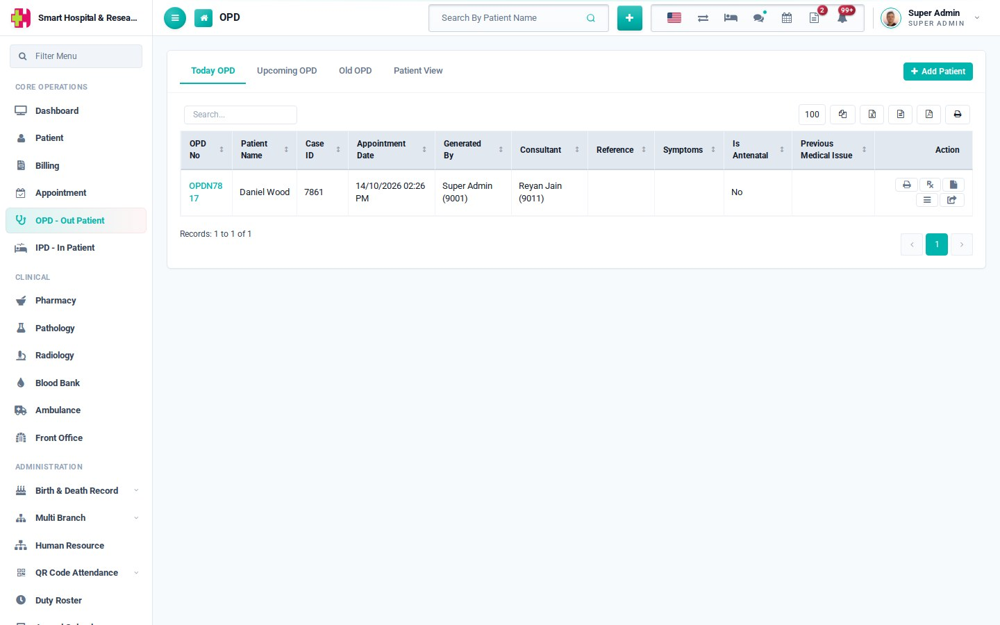
Add Patient New Patient — opened from IPD Patient
/admin/patient/add_inpatient): field (select); Symptoms Type (select) — Eating or weight problems, Emotional problems, Muscle or joint problems, Skin problems, Bladder problems, Stomach problems; Symptoms Type (search); Select (text); Symptoms Description (textarea); ICD-10 Groups (select) — Select Group, Infectious & Parasitic Diseases, Infectious Diseases, Mental & Behavioural Disorders, Neoplasms, Viral Diseases; ICD-10 Diagnosis (select) — [A09] Infectious Gastroenteritis, [A15.0] Pulmonary Tuberculosis, [B34.9] Viral Infection, Unspecified, [C50.9] Malignant Neoplasm of Breast, [F41.1] Generalized Anxiety Disorder; ICD-10 Diagnosis (search); Note (textarea); Previous Medical Issue (text); Admission Date * (text); Case (text); TPA (text); Casualty (select) — Yes, No; Old Patient (select) — Yes, No; Credit Limit ($) * (text); Reference (text); Consultant Doctor * (select) — Amit Singh (9009), Reyan Jain (9011), Sansa Gomez (9008), Sonia Bush (9002); Bed Group (select) — VIP Ward - Ground Floor, Private Ward - 3rd Floor, General Ward Male - 3rd Floor, ICU - 2nd Floor, NICU - 2nd Floor, AC (Normal) - 1st Floor; Bed Number * (select); Live Consultation (select) — No, Yes; Is For Antenatal (checkbox)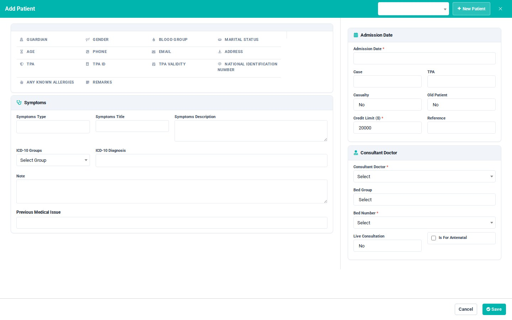
The departments that raise bills and reports against a patient: pharmacy, laboratory, imaging, blood bank, ambulance and front office.
Key capabilities
| # | Screen | What it covers | Path |
|---|---|---|---|
| 1 | Pharmacy Bill | Pharmacy point of sale: batch-wise issue, GST, discounts, stock deduction and printable bill. | /admin/pharmacy/bill |
| 2 | Pathology Bill | Laboratory worklist: order intake, sample collection, result entry/approval and single or batch report generation. | /admin/pathology/gettestreportbatch |
| 3 | Radiology Bill | Imaging worklist: order intake, scheduling, findings entry and batch report generation. | /admin/radio/gettestreportbatch |
| 4 | Blood Bank | Blood bank: component stock by group, donor registry, issue to patient and status board. | /admin/bloodbankstatus/ |
| 5 | Ambulance Call List | Ambulance call register with vehicle/driver, trip details and charges. | /admin/vehicle/getcallambulance |
| 6 | Visitor List | Reception toolkit: visitor pass, phone call log, postal register and complaints. | /admin/visitors |
/admin/pharmacy/billApply TPA (select); Prescription No (text); Apply TPA (checkbox); Bill No (text); Case ID (text); Date (text)sr_patient_id_display (select); Bill No / Sale Bill No (text); Bill No (text); Date (text)Name * (text); Guardian Name (text); Phone (text); Gender (select) — Male, Female; Date Of Birth (text); Year (text); Month (text); Day (text); Blood Group (select) — O+, A+, B+, AB+, O-, A-; Marital Status (select) — Single, Married, Widowed, Separated, Not Specified; Email (text); Address (input); National Identification Number (input); file (file); Remarks (textarea); Any Known Allergies (textarea); TPA (select) — Medi life2, Medicare TPA Services (India), Family Health Plan (FHPL), Raksha Health Insurance, Paramount Health Services, LIFE MEDICAL INSURANCE; TPA ID (input); TPA Validity (input); Alternate Number (text)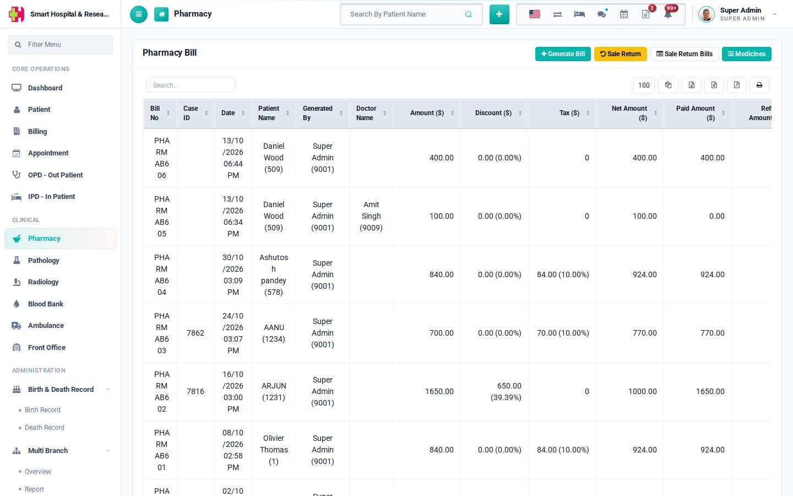
/admin/pathology/gettestreportbatchApply TPA (select); Prescription No (text); Apply TPA (checkbox); Bill No (text); Case ID (text); Date (text)/admin/pathology/updatecollection): Sample Collected Person Name (select) — Belina Turner (9005); Collected Date (text); Pathology Center (text)Name * (text); Guardian Name (text); Phone (text); Gender (select) — Male, Female; Date Of Birth (text); Year (text); Month (text); Day (text); Blood Group (select) — B+, A+, AB-, AB+, O-, A-; Marital Status (select) — Single, Married, Widowed, Separated, Not Specified; Email (text); Address (input); National Identification Number (input); file (file); Remarks (textarea); Any Known Allergies (textarea); TPA (select) — Medi life2, Medicare TPA Services (India), Family Health Plan (FHPL), Raksha Health Insurance, Paramount Health Services, LIFE MEDICAL INSURANCE; TPA ID (input); TPA Validity (input); Alternate Number (text)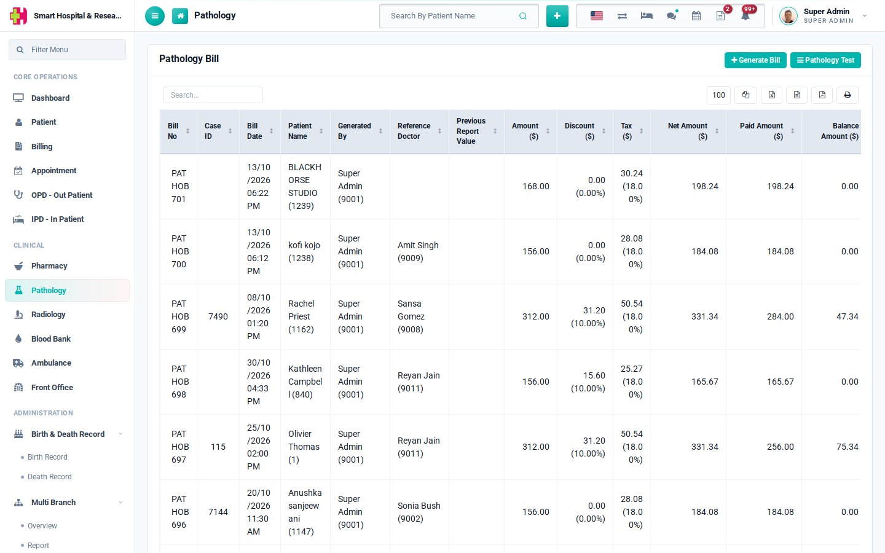
/admin/radio/gettestreportbatchApply TPA (select); Prescription No (text); Apply TPA (checkbox); Bill No (text); Case ID (text); Date (text)Sample Collected Person Name (select) — John Hook (9006); Collected Date (text); Radiology Center (text)Name * (text); Guardian Name (text); Phone (text); Gender (select) — Male, Female; Date Of Birth (text); Year (text); Month (text); Day (text); Blood Group (select) — B+, A+, AB-, AB+, O-, A-; Marital Status (select) — Single, Married, Widowed, Separated, Not Specified; Email (text); Address (input); National Identification Number (input); file (file); Remarks (textarea); Any Known Allergies (textarea); TPA (select) — Medi life2, Medicare TPA Services (India), Family Health Plan (FHPL), Raksha Health Insurance, Paramount Health Services, LIFE MEDICAL INSURANCE; TPA ID (input); TPA Validity (input); Alternate Number (text)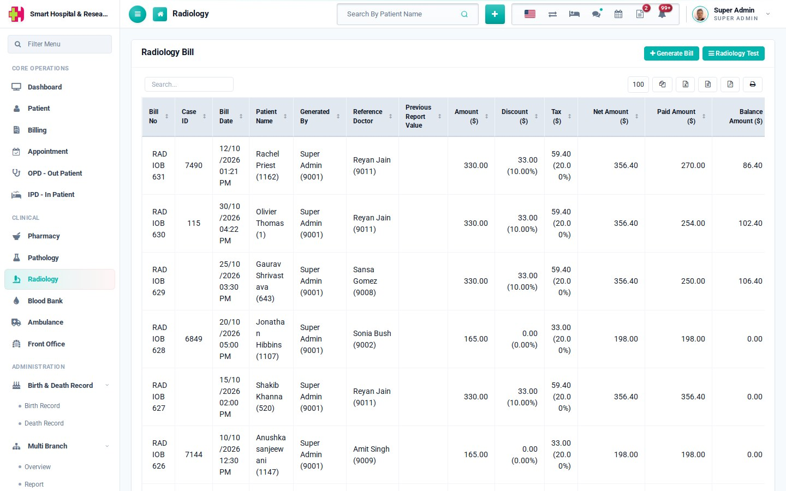
/admin/bloodbankstatus//admin/bloodbankstatus/status): Blood Group (text); status (in bags) * (text)Blood Donor * (select); Donate Date * (text); Bag * (text); Volume (text); Unit Type (select) — (ML), Litter, (nm), per day, Hour, Insurance; Lot (text); Charge Category * (select); Charge Name * (select); Standard Charge ($) * (text); Institution (text); note (textarea); total (text); discount_percent (text); discount (text); tax_percentage (text); tax (text); net_amount (text); Payment Mode (select) — Cash, Cheque, Transfer to Bank Account, UPI, Online, Other; Payment Amount ($) * (text); Cheque No * (text); Cheque Date * (text); document (file)Blood Group * (select) — B+, A+, AB-, AB+, O-, A-; Bag * (select); Platelets (checkbox); bag_no_9 (text); volume_9 (text); unit_9 (select) — (ML), Litter, (nm), per day, Hour, Insurance; lot_9 (text); institution_9 (text); Plasma (checkbox); bag_no_10 (text); volume_10 (text); unit_10 (select) — (ML), Litter, (nm), per day, Hour, Insurance; lot_10 (text); institution_10 (text); Cryo. (checkbox); bag_no_11 (text); volume_11 (text); unit_11 (select) — (ML), Litter, (nm), per day, Hour, Insurance; lot_11 (text); institution_11 (text); White Cells & Granulocytes (checkbox); bag_no_12 (text); … +16 more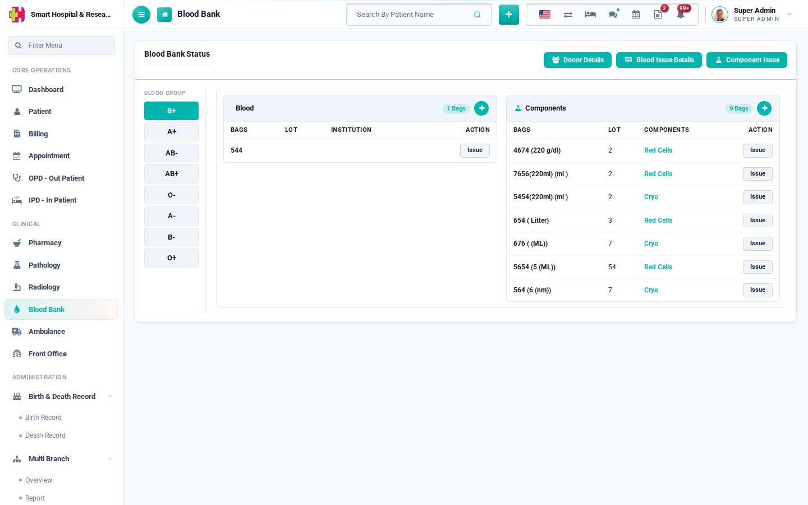
/admin/vehicle/getcallambulancepatient_id (select); Case ID (text); Vehicle Model (select) — Force Traveller Ambulance - MP04 AB 1234, Tata Winger - MP21 CD 4587, Force Traveller - MP21 AB 1023, BS4 - MP20CD2105, BS4FGD - MP20SD4323, Tata Winge - UP14 AB 1234; Driver Name (text); Date (text); Charge Category (select) — Private Ambulance, ERS/Patient Transport Service, Other Charges, Operation Services, Oxygen cylinder, Fire extinguisher; Charge Name (select); Standard Charge (input); Emergency Level (textarea); Emergency Level (text); total (text); discount_percent (text); discount (text); tax_percentage (text); tax (text); net_amount (text); Payment Mode (select) — Cash, Cheque, Transfer to Bank Account, UPI, Online, Other; Payment Amount ($) * (text); Cheque No * (text); Cheque Date * (text); document (file)patient_id (select) — Select Patient; Case ID (text); Vehicle Number (select) — Force Traveller Ambulance - MP04 AB 1234, Tata Winger - MP21 CD 4587, Force Traveller - MP21 AB 1023, BS4 - MP20CD2105, BS4FGD - MP20SD4323, Tata Winge - UP14 AB 1234; Driver Name (text); Date (text); Charge Category (select) — Private Ambulance, ERS/Patient Transport Service, Other Charges, Operation Services, Oxygen cylinder, Fire extinguisher; Charge Name (select); Standard Charge (input); note (textarea); total (text); discount_percent_edit (text); discount_edit (text); tax_percentage (text); tax (text); net_amount (text); Payment Mode (select) — Cash, Cheque, Transfer to Bank Account, UPI, Online, Other; Payment Amount ($) * (text); Cheque No * (text); Cheque Date * (text); document (file)Name * (text); Guardian Name (text); Phone (text); Gender (select) — Male, Female; Date Of Birth (text); Year (text); Month (text); Day (text); Blood Group (select) — B+, A+, AB-, AB+, O-, A-; Marital Status (select) — Single, Married, Widowed, Separated, Not Specified; Email (text); Address (input); National Identification Number (input); file (file); Remarks (textarea); Any Known Allergies (textarea); TPA (select) — Medi life2, Medicare TPA Services (India), Family Health Plan (FHPL), Raksha Health Insurance, Paramount Health Services, LIFE MEDICAL INSURANCE; TPA ID (input); TPA Validity (input); Alternate Number (text)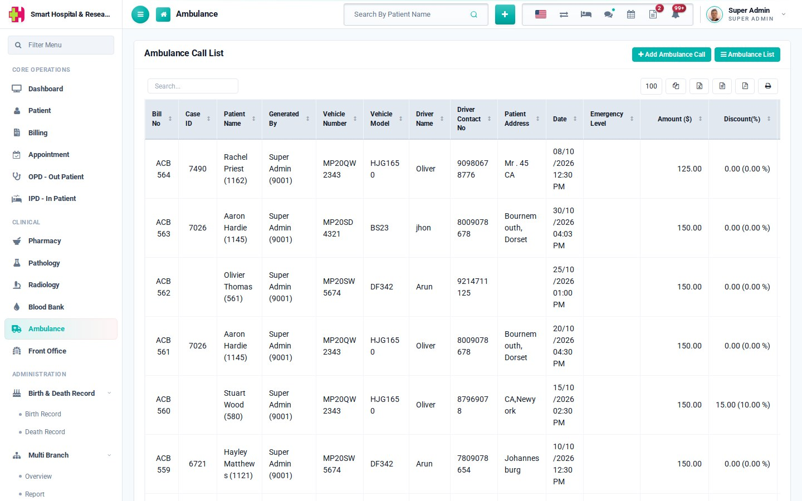
/admin/visitors/admin/visitors/edit): Purpose * (select) — Visit, Inquiry, Seminar; Name * (text); Phone (text); ID Card (text); Visit To (select) — Staff, OPD Patient, IPD Patient; IPD/OPD/Staff (select); Related To (text); Number Of Person (text); Date * (text); time (text); out_time (text); Note (textarea); file (file)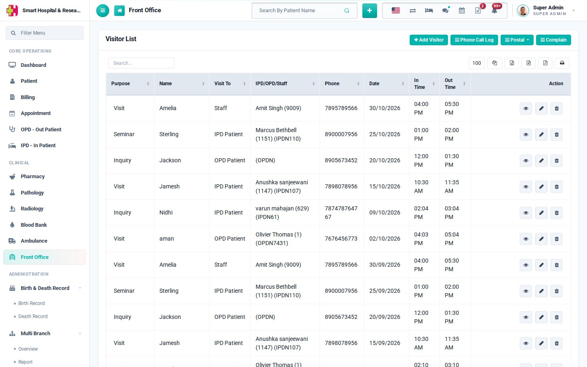
| Screen | Dialog | Fields | Screenshot |
|---|---|---|---|
| Ambulance Call List | Add Ambulance Call New Patient | 21 | 011-ambulance__add-ambulance-call-new-patient.jpg |
| Visitor List | Add Visitor | 13 | 012-front-office__add-visitor.jpg |
Add Ambulance Call New Patient — opened from Ambulance Call List
patient_id (select); Case ID (text); Vehicle Model (select) — Force Traveller Ambulance - MP04 AB 1234, Tata Winger - MP21 CD 4587, Force Traveller - MP21 AB 1023, BS4 - MP20CD2105, BS4FGD - MP20SD4323, Tata Winge - UP14 AB 1234; Driver Name (text); Date (text); Charge Category (select) — Private Ambulance, ERS/Patient Transport Service, Other Charges, Operation Services, Oxygen cylinder, Fire extinguisher; Charge Name (select); Standard Charge (input); Emergency Level (textarea); Emergency Level (text); total (text); discount_percent (text); discount (text); tax_percentage (text); tax (text); net_amount (text); Payment Mode (select) — Cash, Cheque, Transfer to Bank Account, UPI, Online, Other; Payment Amount ($) * (text); Cheque No * (text); Cheque Date * (text); document (file)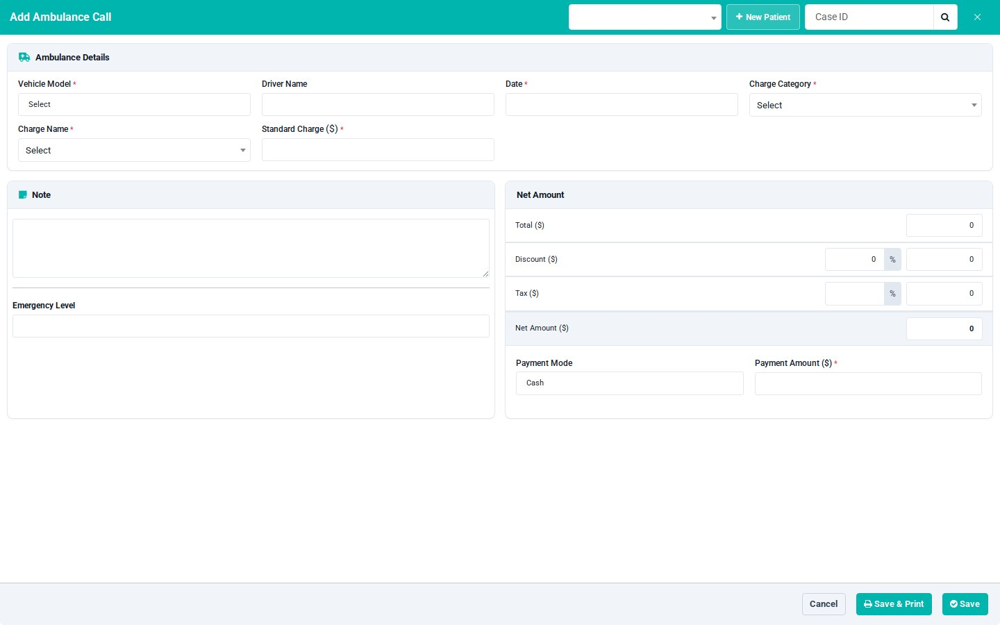
Add Visitor — opened from Visitor List
/admin/visitors/edit) (dialog): Purpose * (select) — Visit, Inquiry, Seminar; Name * (text); Phone (text); ID Card (text); Visit To (select) — Staff, OPD Patient, IPD Patient; IPD/OPD/Staff (select); Related To (text); Number Of Person (text); Date * (text); time (text); out_time (text); Note (textarea); file (file)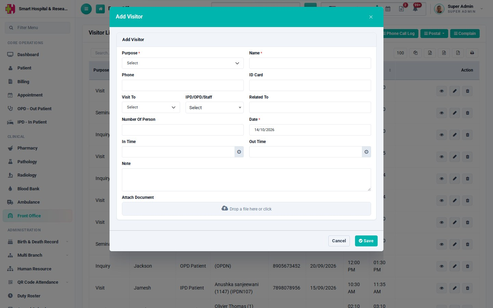
Back office: legal registers, multi-branch operation, staff HR, attendance, rosters, referrals, insurance/TPA and the finance ledger.
Key capabilities
| # | Screen | What it covers | Path |
|---|---|---|---|
| 1 | Birth Record | Birth & Death Record › Birth Record | /admin/birthordeath |
| 2 | Death Record | Birth & Death Record › Death Record | /admin/birthordeath/death |
| 3 | Overview | Group console comparing branches on patients, collections and occupancy. | /admin/multibranch/branch/overview |
| 4 | Report | Cross-branch comparative reporting with date range and module filters. | /admin/multibranch/branch/report |
| 5 | Setting | Branch master: create/edit branches, assign the branch admin and switch the active branch. | /admin/multibranch/branch |
| 6 | Staff Directory | Staff directory with role, designation and department, plus entry points to attendance, payroll and leaves. | /admin/staff |
| 7 | QR Code Attendance | Scan-based staff attendance register with a monthly view and in/out times. | /admin/qrattendance/attendance/index |
| 8 | Settings | QR attendance rules: check-in window, working hours and device/QR configuration. | /admin/qrattendance/setting/index |
| 9 | Duty Roster | Shift roster per staff/department with print and export. | /admin/dutyroster/roster_report |
| 10 | Annual Calendar | Holiday and event calendar, plus to-dos per the vendor help articles. | /admin/holiday/index |
| 11 | Referral Payment List | Referral commission ledger: payouts against referred cases with filters by referral person and period. | /admin/referral/payment |
| 12 | TPA Management | Insurance/TPA register: companies, policies and claim status per patient. | /admin/tpamanagement |
| 13 | Income List | Income ledger: head-wise entries that feed the finance reports and the dashboard trend. | /admin/income |
| 14 | Expense List | Expense ledger: head-wise entries with reference, invoice and remarks. | /admin/expense |
/admin/birthordeathChild Name (text); Gender (select) — Male, Female; Weight (text); Birth Date (text); Phone (text); Case ID (text); Mother Name (text); Father Name (text); Address (text); Report (textarea); Blood Group (select) — 1, 2; child_img (file); first_img (file); second_img (file); document (file)Child Name (text); Gender (select) — Male, Female; Weight (text); Birth Date (text); Phone (text); Case ID (text); Mother Name (text); Father Name (text); Address (text); Report (textarea); child_img (file); mother_pic (file); father_pic (file); document (file)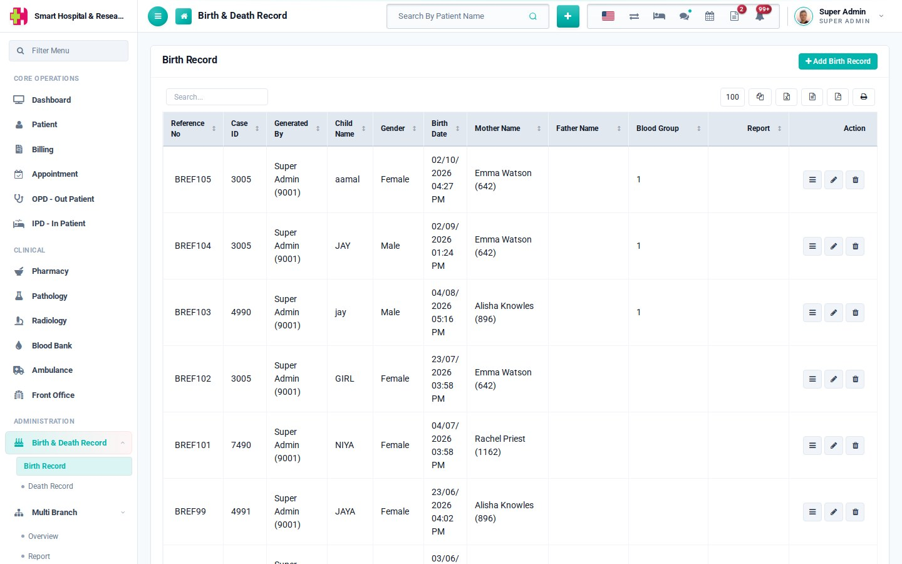
/admin/birthordeath/deathCase ID * (text); Patient Name * (text); Death Date * (text); Guardian Name * (text); document (file); Report (textarea); Blood Group (select) — 1, 2Case ID * (text); Patient Name * (text); Death Date * (text); Guardian Name * (text); document (file); Report (textarea)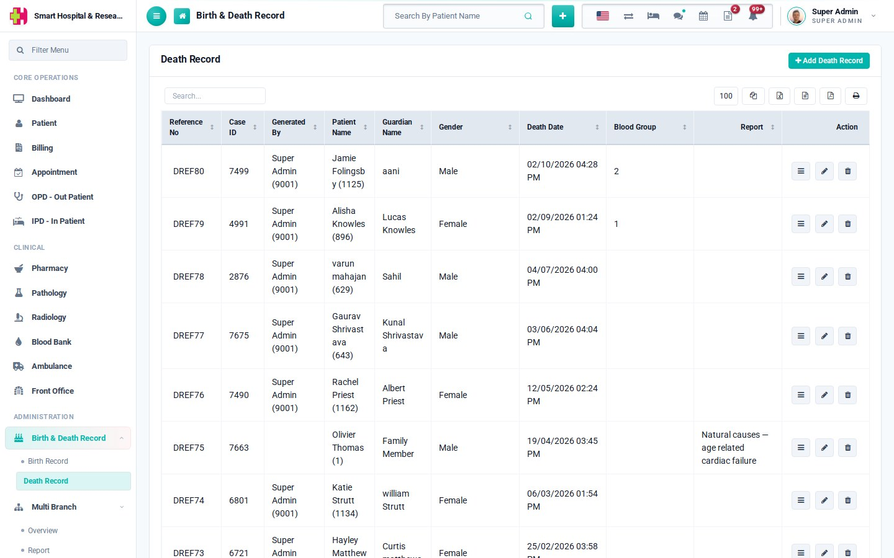
/admin/multibranch/branch/overview/admin/multibranch/branch/overview): Time Duration (select) — Today, This Week, Last Week, This Month, Last Month, Last 3 Months; Date From (text); Date To (text)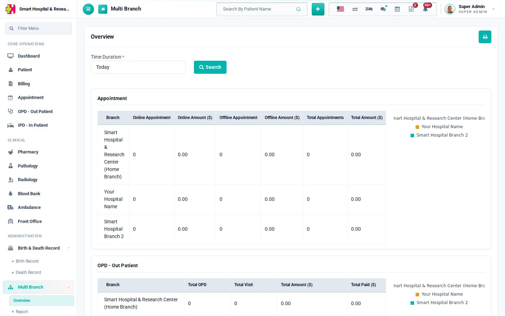
/admin/multibranch/branch/report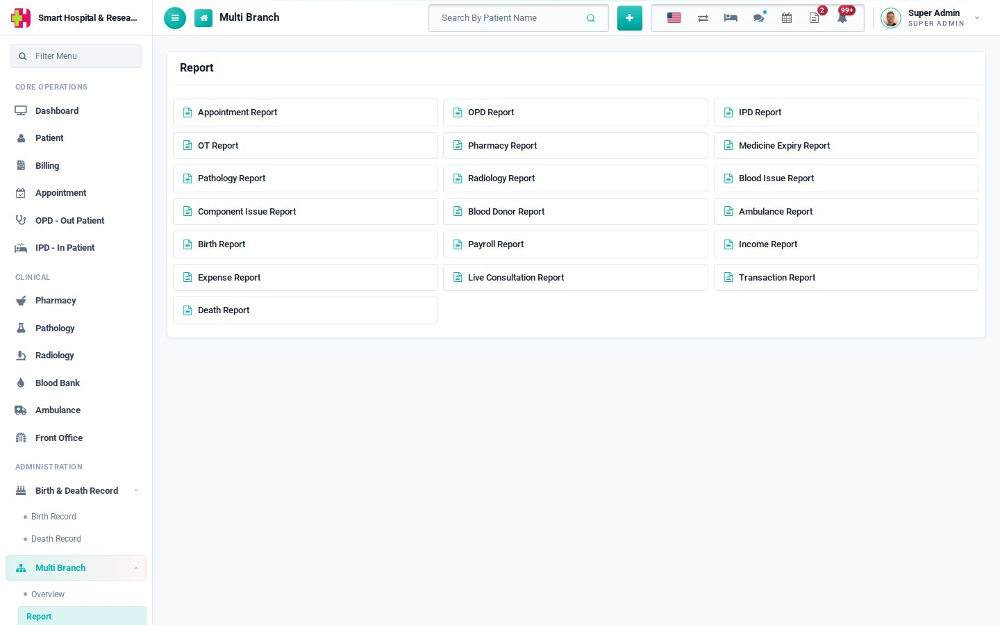
/admin/multibranch/branch/admin/multibranch/branch/add): Envato Purchase Code * (text); Branch name * (text); Host Name * (text); Database Name * (text); Username * (text); Password * (password)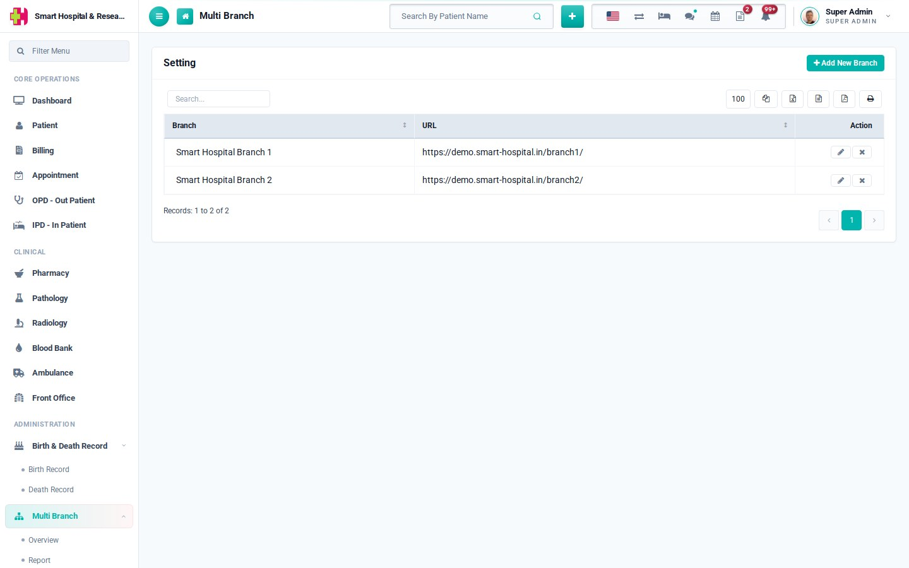
/admin/staff/admin/staff): Role (select) — Admin, Accountant, Doctor, Pharmacist, Pathologist, Radiologist; Search By Keyword (text)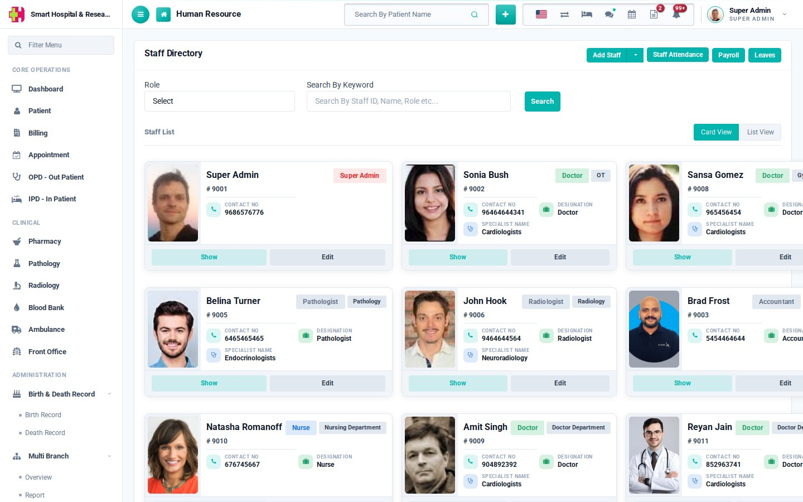
/admin/qrattendance/attendance/index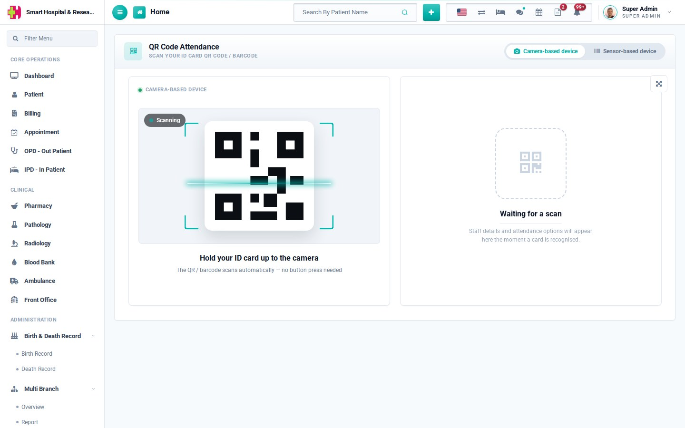
/admin/qrattendance/setting/index/admin/qrattendance/setting): Disabled (radio); Auto Attendance * (radio); Scanner Device Type * (checkbox); Camera-based device, like a mobile phone or webcam (checkbox); Select Camera * (radio); Secondary (Front) (radio)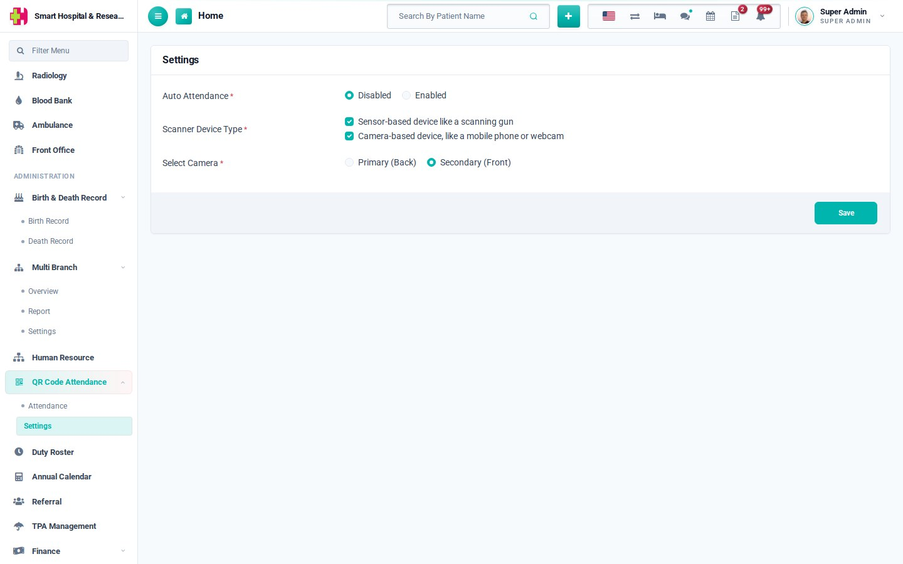
/admin/dutyroster/roster_report/admin/dutyroster/roster_report): Time Duration * (select) — Today, This Week, Last Week, This Month, Last Month, Last 3 Months; Date From (text); Date To (text); staff (select) — Super Admin (9001), Sonia Bush (9002), Sansa Gomez (9008), Belina Turner (9005), John Hook (9006), Brad Frost (9003)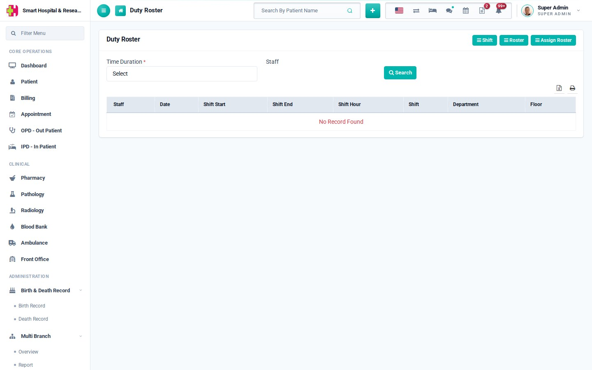
/admin/holiday/index/admin/holiday): Type * (select) — Holiday, Activity, VacationType * (radio); Type * (radio); Type * (radio); From Date * (text); To Date * (text); Description * (textarea); front_site (checkbox)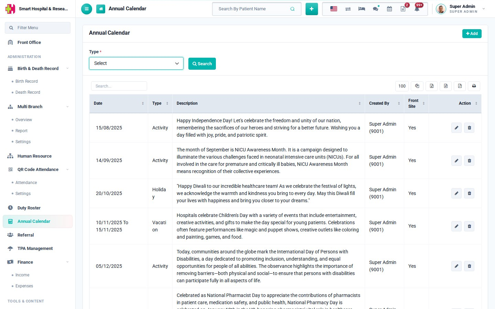
/admin/referral/paymentPatient Type * (select) — Select Type, OPD, IPD, Pharmacy, Pathology, Radiology; Bill No/Case Id * (select); Patient Bill Amount ($) * (text); Payee * (select) — Select Payee, ABHI, Aarav, Laxmi Sahu, Amol, Ankita; Commission Percentage (%) * (text); Commission Amount ($) * (text)Commission Percentage (%) * (text); Commission Amount ($) * (text)Name * (text); Guardian Name (text); Phone (text); Gender (select) — Male, Female; Date Of Birth (text); Year (text); Month (text); Day (text); Blood Group (select); Marital Status (select); Email (text); Address (input); National Identification Number (input); file (file); Remarks (textarea); Any Known Allergies (textarea); TPA (select); TPA ID (input); TPA Validity (input); Alternate Number (text)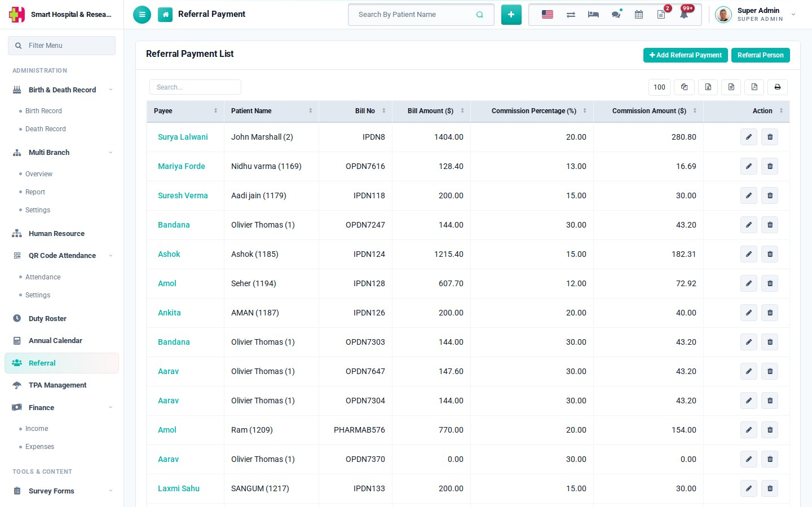
/admin/tpamanagementName * (text); Code * (text); Contact No * (text); Address (textarea); Contact Person Name (text); Contact Person Phone (text)Name * (text); Code * (text); Contact No * (text); Address (textarea); Contact Person Name (text); Contact Person Phone (text)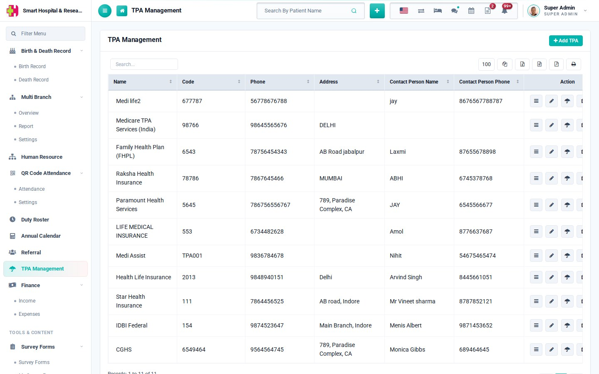
/admin/incomeIncome Head * (select) — Hospital charges, Special campaign, Canteen Rent, Vehicle Stand Charges; Name * (text); Invoice Number (text); Date * (text); Amount ($) * (text); documents (file); Description (textarea)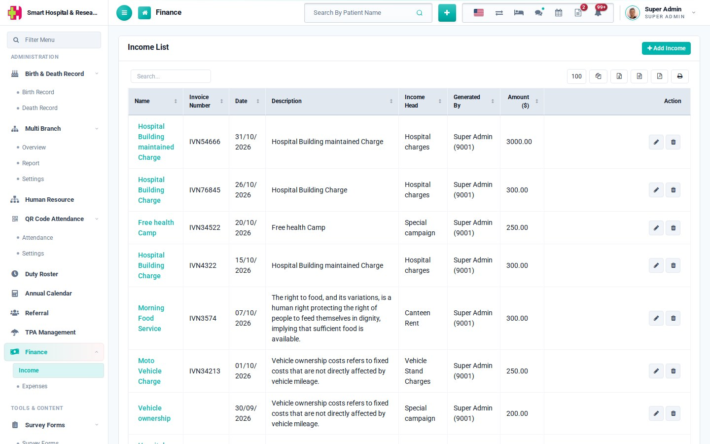
/admin/expenseExpense Head * (select) — Building rent, Equipements, Electricity Bill, Telephone Bill, Power Generator Fuel Charge, Tea Expense; Name * (text); Invoice Number (text); Date * (text); Amount ($) * (text); documents (file); Description (textarea)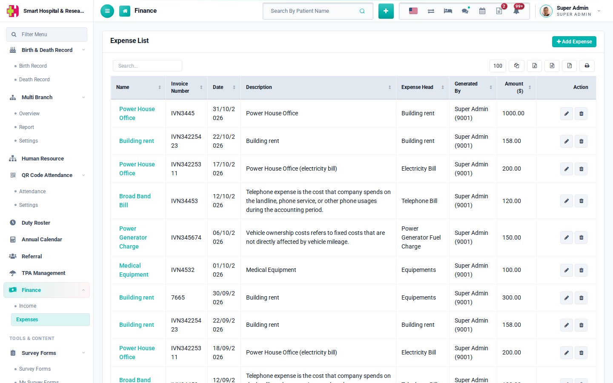
| Screen | Dialog | Fields | Screenshot |
|---|---|---|---|
| Setting | Add New Branch | 6 | 017-multi-branch-settings__add-new-branch.jpg |
| Referral Payment List | Add Referral Payment Select Patient | 7 | 023-referral__add-referral-payment-select-patient.jpg |
| TPA Management | Add TPA | 6 | 024-tpa-management__add-tpa.jpg |
| Income List | Add Income | 7 | 025-finance-income__add-income.jpg |
| Expense List | Add Expense | 7 | 026-finance-expenses__add-expense.jpg |
Add New Branch — opened from Setting
/admin/multibranch/branch/add): Envato Purchase Code * (text); Branch name * (text); Host Name * (text); Database Name * (text); Username * (text); Password * (password)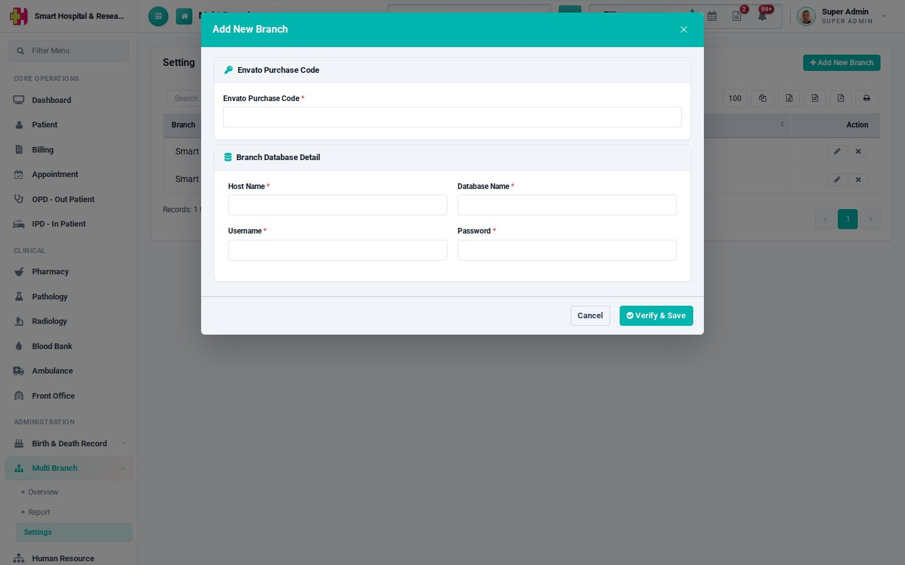
Add Referral Payment Select Patient — opened from Referral Payment List
Patient Type * (select) — Select Type, OPD, IPD, Pharmacy, Pathology, Radiology; Bill No/Case Id * (select); Patient Bill Amount ($) * (text); Payee * (select) — Select Payee, ABHI, Aarav, Laxmi Sahu, Amol, Ankita; Commission Percentage (%) * (text); Commission Amount ($) * (text)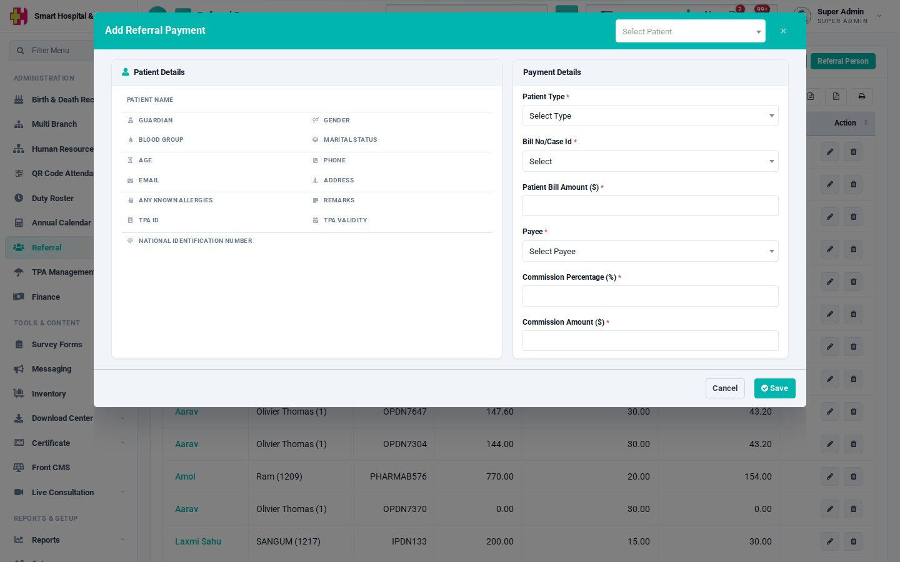
Add TPA — opened from TPA Management
Name * (text); Code * (text); Contact No * (text); Address (textarea); Contact Person Name (text); Contact Person Phone (text)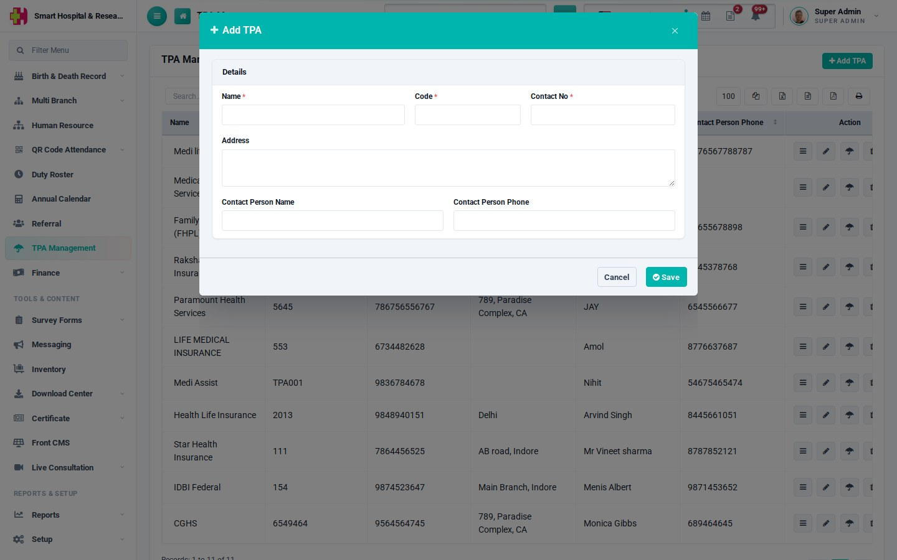
Add Income — opened from Income List
Income Head * (select) — Hospital charges, Special campaign, Canteen Rent, Vehicle Stand Charges; Name * (text); Invoice Number (text); Date * (text); Amount ($) * (text); documents (file); Description (textarea)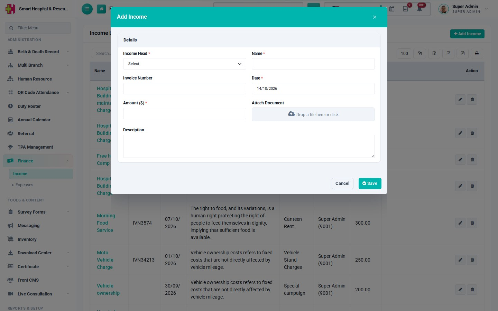
Add Expense — opened from Expense List
Expense Head * (select) — Building rent, Equipements, Electricity Bill, Telephone Bill, Power Generator Fuel Charge, Tea Expense; Name * (text); Invoice Number (text); Date * (text); Amount ($) * (text); documents (file); Description (textarea)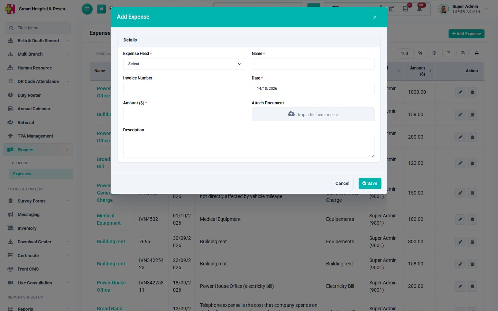
Everything that talks to people or produces a document: surveys, notice board, downloads, inventory, ID cards, certificates, the public website CMS and telemedicine.
Key capabilities
| # | Screen | What it covers | Path |
|---|---|---|---|
| 1 | Survey Forms | Survey builder: create questionnaires, assign them to roles/departments and read responses. | /admin/survey |
| 2 | Survey Forms › My Survey Forms | The signed-in staff member's own survey forms. | /admin/survey/staff_forms |
| 3 | Notice Board | Notice board for staff/patients with audience targeting and attachments. | /admin/notification |
| 4 | Item Stock List | Item stock control: categories, suppliers, issue and return, stock ledger and reorder levels. | /admin/itemstock |
| 5 | Upload /Share Content | Upload/share documents with staff, patients or the public site, with content type and audience. | /admin/content/upload |
| 6 | Content Share List | Everything shared so far, with filters and download counters. | /admin/content/list |
| 7 | Content Type | Content type master used when uploading shared content. | /admin/contenttype/ |
| 8 | Generate Certificate | Certificate generator: pick module and discharged patients, choose a template and generate single or bulk certificates. | /admin/generatecertificate |
| 9 | Generate Patient ID Card | Patient ID-card generation from templates with photo and MR number. | /admin/generatepatientidcard/ |
| 10 | Generate Staff ID Card | Staff ID-card generation from templates. | /admin/generatestaffidcard/ |
| 11 | Page List | Website content management: pages, banners, news, gallery, contact and SEO for the public site. | /admin/front/page |
| 12 | Live Consultation | Zoom teleconsultation: schedule a session for a patient, share the link, start/end and log the call. | /admin/zoom_conference/consult |
| 13 | Live Meeting | Internal staff video meetings with scheduling and participants. | /admin/zoom_conference/meeting |
/admin/survey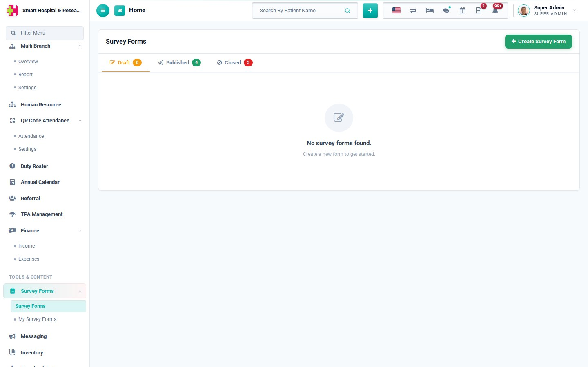
/admin/survey/staff_forms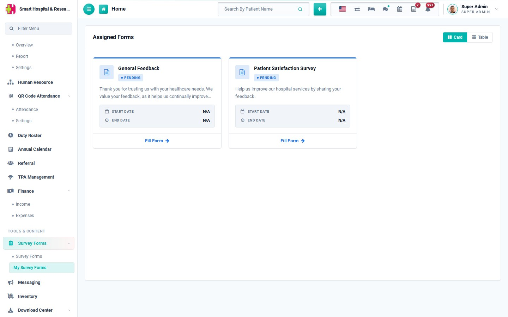
/admin/notification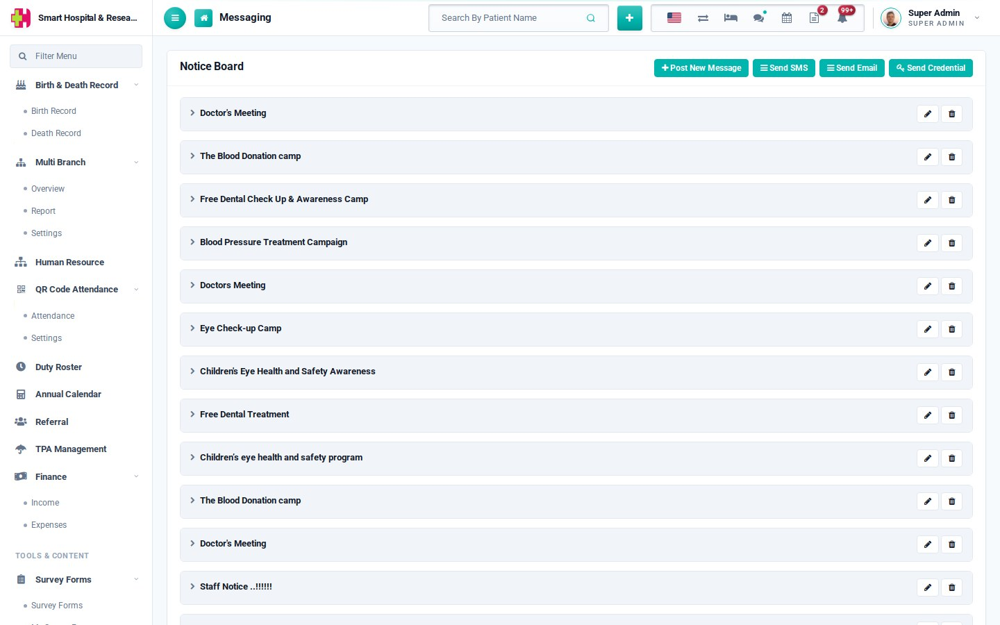
/admin/itemstock/admin/itemstock/add): Item Category * (select) — Syringe Packs, Cotton Packs, Medical Equipment, Bed Sheets, Uniforms, Surgical blades; Item * (select); Supplier * (select) — VK Supplier, Quick Service; Store (select) — SK Pharma, Vinay Pharmacy, Vardaan; quantity (text); Purchase Price * (text); Date (text); Description (textarea); item_photo (file)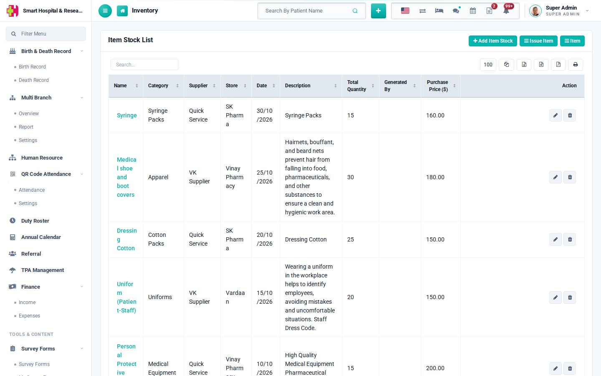
/admin/content/upload/#): Search… (text)/admin/content/ajaxupdate): File Name * (text); Content Type * (select) — Medical Report, medical Equipment, Medicine Stock List, Hospital Service/admin/content/ajaxupload): Content Type * (select) — Medical Report, medical Equipment, Medicine Stock List, Hospital Service; upload[] (file); Upload Youtube Video Link (text)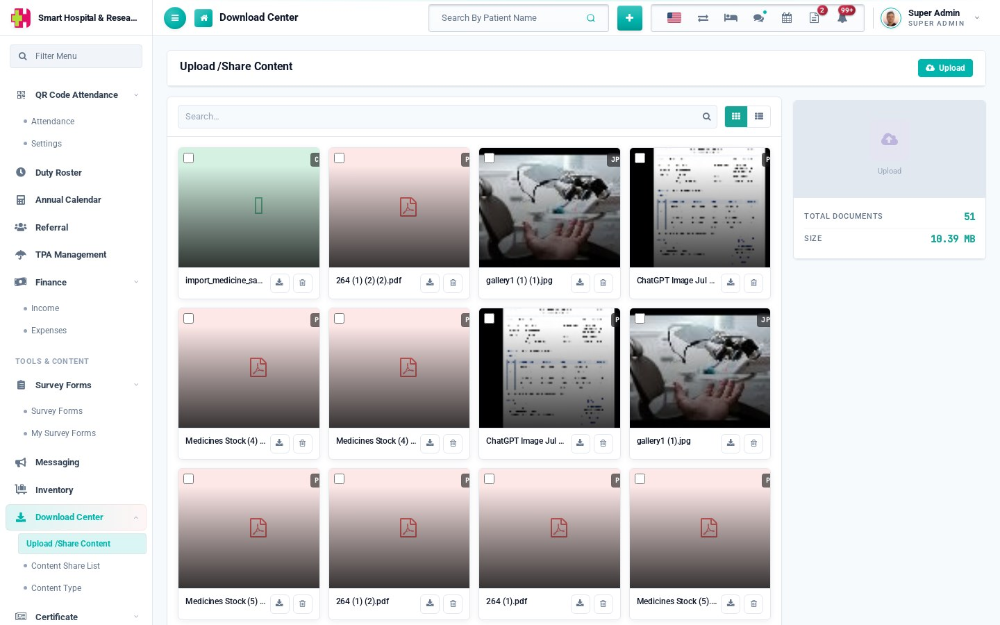
/admin/content/list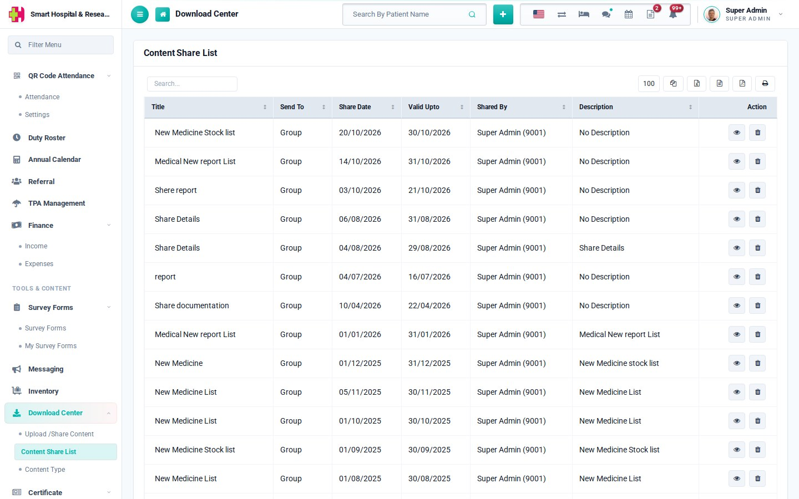
/admin/contenttype//admin/contenttype/add): Name (text); Description (textarea)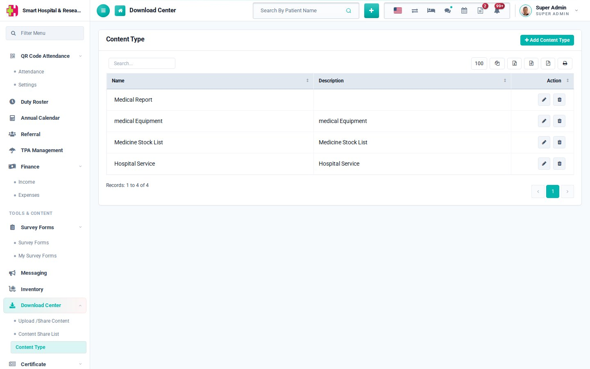
/admin/generatecertificate/admin/generatecertificate/search): Module (select) — OPD, IPD; Patient Status (select) — Not Discharged, Discharged; Certificate Template (select) — Sample Patient File Cover, Certificate Template/admin/generatecertificate/generatemultiple): field (checkbox)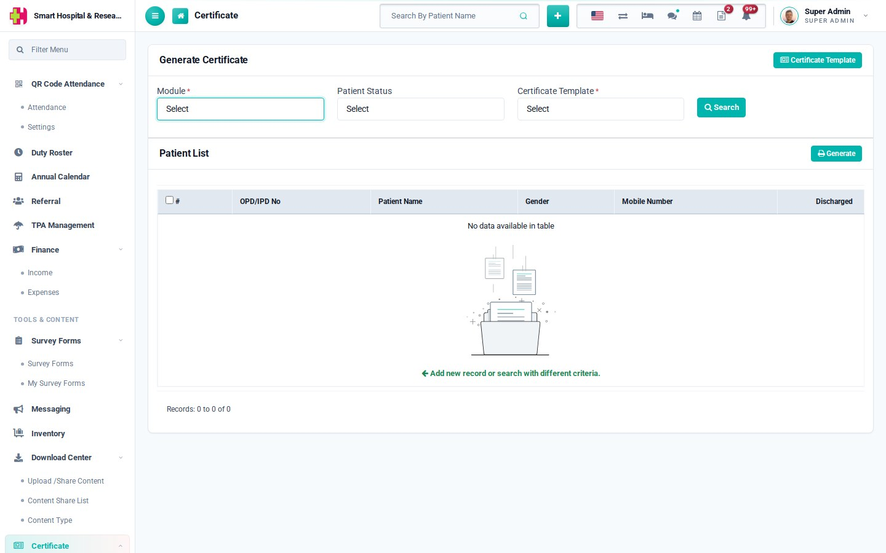
/admin/generatepatientidcard/Patient (select) — All, AADI(1171), Aadi jain(1179), Aadish Mody(1072), AANU(1233), AANU(1234); ID Card Template (select) — Sample Patient Id Card, Patient Id Card/admin/Generatepatientidcard/generatemultiple): field (checkbox)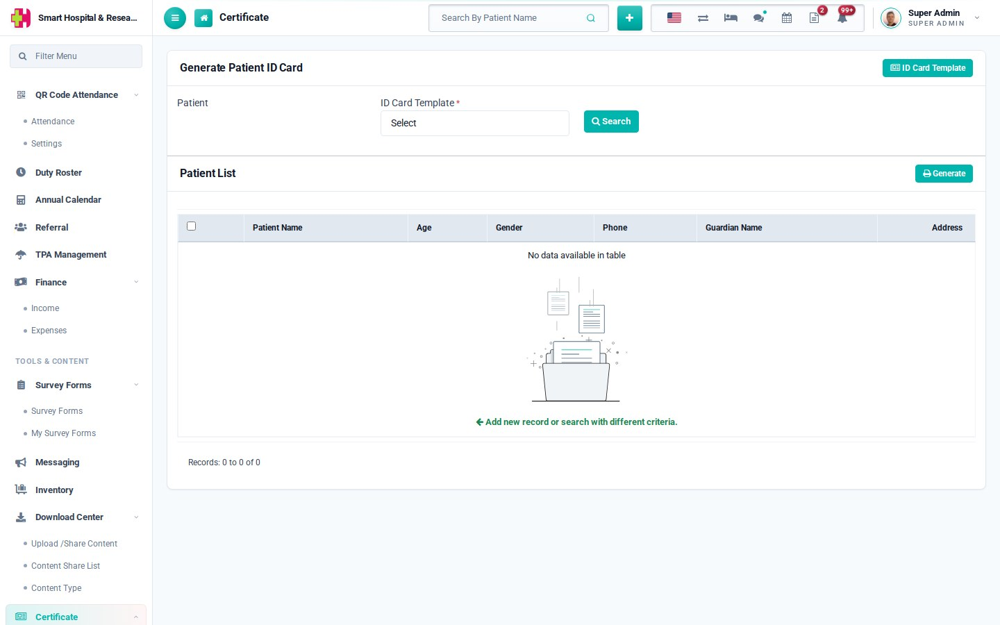
/admin/generatestaffidcard/Role (select) — Admin, Accountant, Doctor, Pharmacist, Pathologist, Radiologist; ID Card Template (select) — Sample Staff Id Card, Staff Id Card/admin/generatestaffidcard/generatemultiple): field (checkbox)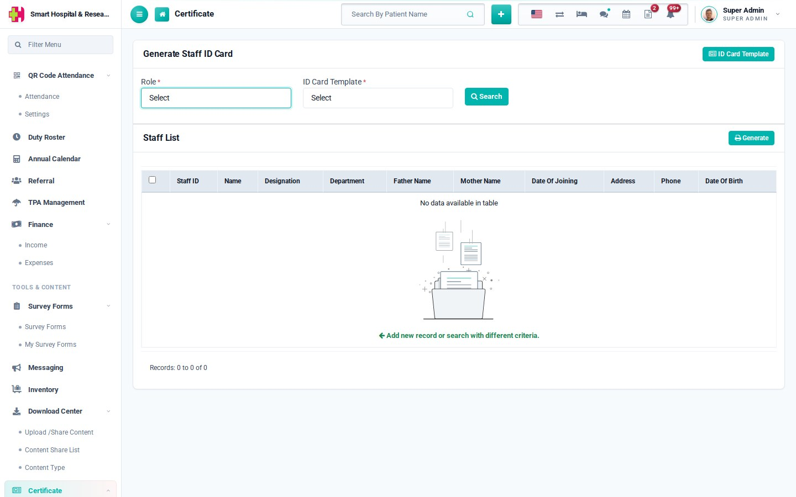
/admin/front/page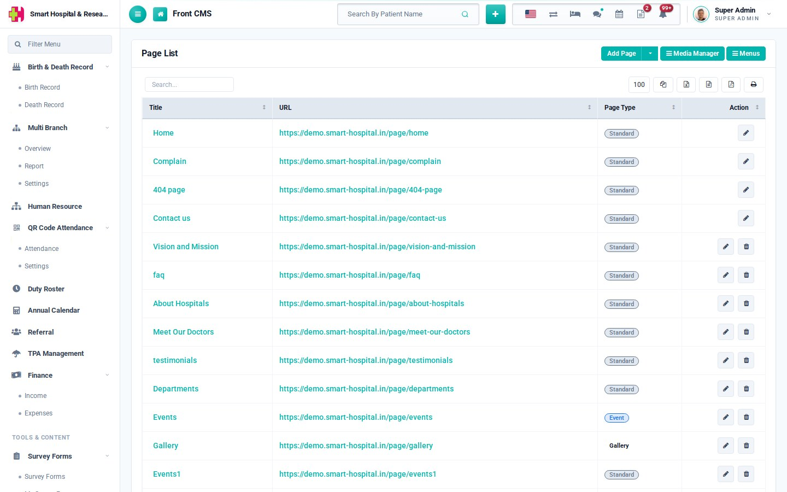
/admin/zoom_conference/consult/admin/zoom_conference/chgstatus): chg_status (select) — Awaited, Cancelled, Finished/admin/zoom_conference/addcredential): Zoom Api Key * (text); Zoom Api Secret * (text)/admin/zoom_conference/addByOther): Consultation Title (text); Consultation Date * (text); Consultation Duration Minutes * (number); OPD/IPD (select) — None, OPD, IPD; OPD/IPD No (select); OPD Checkup ID * (select); Consultant Doctor * (select) — Amit Singh (9009), Reyan Jain (9011), Sansa Gomez (9008), Sonia Bush (9002); Enabled (radio); Enabled (radio); Enabled (radio); Enabled (radio); Description (textarea)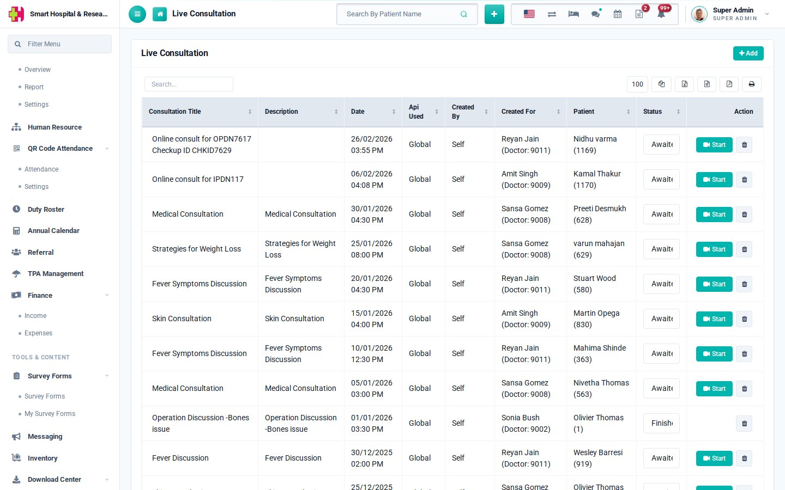
/admin/zoom_conference/meeting/admin/zoom_conference/chgstatusmeeting): chg_status (select) — Awaited, Cancelled, Finished/admin/zoom_conference/addMeeting): Meeting Title * (text); date (text); Meeting Duration Minutes * (number); Enabled (radio); Enabled (radio); Enabled (radio); Enabled (radio); Description (textarea); Sonia Bush (Doctor : 9002) (checkbox); Sansa Gomez (Doctor : 9008) (checkbox); Belina Turner (Pathologist : 9005) (checkbox); John Hook (Radiologist : 9006) (checkbox); Brad Frost (Accountant : 9003) (checkbox); Natasha Romanoff (Nurse : 9010) (checkbox); Amit Singh (Doctor : 9009) (checkbox); Reyan Jain (Doctor : 9011) (checkbox); Harry Grant (Pharmacist : 9012) (checkbox); Jason Abbot (Admin : 9017) (checkbox); Maria Ford (Receptionist : 9018) (checkbox); April Clinton (Nurse : 9020) (checkbox)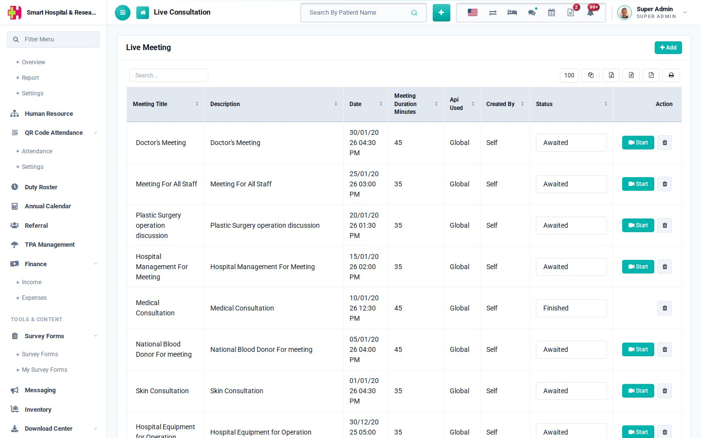
| Screen | Dialog | Fields | Screenshot |
|---|---|---|---|
| Item Stock List | Add Item Stock | 9 | 030-inventory__add-item-stock.jpg |
| Upload /Share Content | Upload | 3 | 031-download-center-upload-share-content__upload.jpg |
| Live Consultation | Live Consult Select Patient New Patient | 13 | 038-live-consultation-live-consultation__live-consult-select-patient-new-patient.jpg |
| Live Meeting | Add Live Meeting | 20 | 039-live-consultation-live-meeting__add-live-meeting.jpg |
Add Item Stock — opened from Item Stock List
/admin/itemstock/add): Item Category * (select) — Syringe Packs, Cotton Packs, Medical Equipment, Bed Sheets, Uniforms, Surgical blades; Item * (select); Supplier * (select) — VK Supplier, Quick Service; Store (select) — SK Pharma, Vinay Pharmacy, Vardaan; quantity (text); Purchase Price * (text); Date (text); Description (textarea); item_photo (file)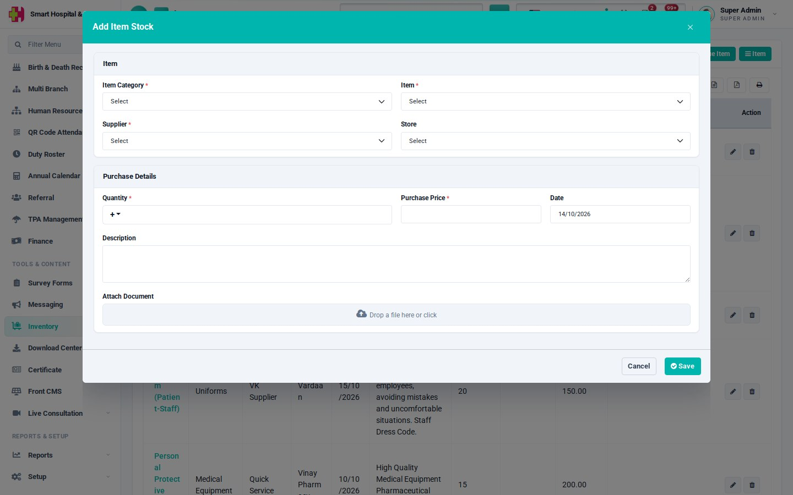
Upload — opened from Upload /Share Content
/#) (dialog): Search… (text)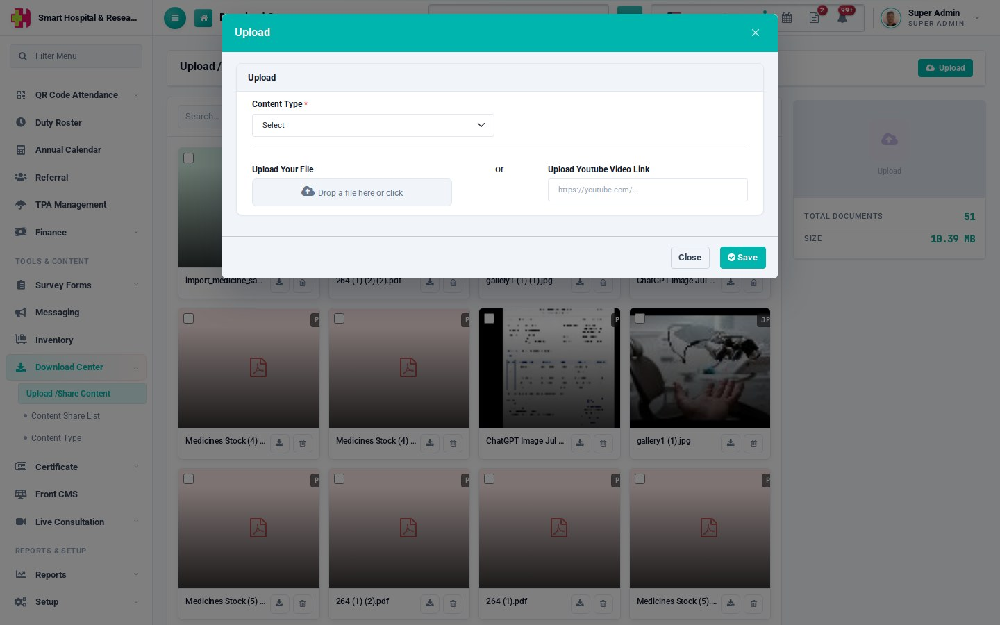
Live Consult Select Patient New Patient — opened from Live Consultation
/admin/zoom_conference/chgstatus): chg_status (select) — Awaited, Cancelled, FinishedAdd Live Meeting — opened from Live Meeting
/admin/zoom_conference/chgstatusmeeting): chg_status (select) — Awaited, Cancelled, FinishedThe 17 management reports plus the master data and lookups that make the rest of the application work.
Key capabilities
| # | Screen | What it covers | Path |
|---|---|---|---|
| 1 | Finance | Reports › Finance | /admin/report/finance |
| 2 | Appointment | Reports › Appointment | /admin/report/appointment |
| 3 | OPD | Reports › OPD | /admin/report/opd |
| 4 | IPD | Reports › IPD | /admin/report/ipd |
| 5 | Pharmacy | Reports › Pharmacy | /admin/report/pharmacy |
| 6 | Pathology | Reports › Pathology | /admin/report/pathology |
| 7 | Radiology | Reports › Radiology | /admin/report/radiology |
| 8 | Blood Bank | Reports › Blood Bank | /admin/report/blood_bank |
| 9 | Ambulance | Reports › Ambulance | /admin/report/ambulance |
| 10 | Birth Death Report | Reports › Birth Death | /admin/report/birth_death |
| 11 | Human Resource | Reports › Human Resource | /admin/report/human_resource |
| 12 | TPA | Reports › TPA | /admin/report/tpa |
| 13 | Inventory | Reports › Inventory | /admin/report/inventory |
| 14 | Live Consultation | Reports › Live Consultation | /admin/report/live_consultation |
| 15 | Log | Reports › Log | /admin/report/log |
| 16 | OT | Reports › OT | /admin/report/ot |
| 17 | Reports › Patient | Reports › Patient | /admin/report/patient |
| 18 | Charges Details List | The charge catalogue (consultation, procedures, room, investigations, services) reused by billing, OPD and IPD. | /admin/charges |
| 19 | Bed Status | Bed/ward master with live occupancy status board. | /admin/setup/bed/status |
| 20 | Appointment Header Footer | Per-module print header/footer designer used by every printed bill, report, prescription, certificate and ID card. | /admin/printing |
| 21 | Purpose List | Setup › Front Office | /admin/visitorspurpose |
| 22 | Operation List | Setup › Operations | /admin/operationtheatre/index |
| 23 | Medicine Category List | Medicine categories, units, suppliers and the medicine master (batch, MRP, sale price, GST, reorder level). | /admin/medicinecategory/medicine |
| 24 | Pathology Category List | Pathology categories and tests with parameters, units and normal ranges. | /admin/pathologycategory/addcategory |
| 25 | Radiology Category List | Radiology categories and studies. | /admin/lab/addlab |
| 26 | Product List | Blood-bank components, bag types and product stock. | /admin/bloodbank/products |
| 27 | Symptoms Head List | Symptom library used by OPD/IPD clinical entry. | /admin/symptoms |
| 28 | ICD-10 Codes List | ICD-10 code library used for diagnosis entry. | /admin/icd10 |
| 29 | Finding List | Finding library used by clinical encounters. | /admin/finding |
| 30 | Vital List | Vital-sign master (temperature, pulse, BP, respiration, SpO2, BMI) for IPD/OPD charts. | /admin/vital |
| 31 | Settings | Zoom API keys/secret so live consultation and live meeting work. | /admin/zoom_conference |
| 32 | Income Head List | Income and expense heads used by the finance ledger and reports. | /admin/incomehead |
| 33 | Leave Type List | Leave types and standing HR configuration. | /admin/leavetypes |
| 34 | Referral Commission List | Referral commission percentages per referral person/service. | /admin/referral/commission |
| 35 | Slots | Appointment slots and the online-appointment intake queue. | /admin/onlineappointment/index |
| 36 | Item Category List | Item categories and the item master for inventory. | /admin/itemcategory |
| 37 | Add Custom Field | Add hospital-specific fields to core entities without changing the schema. | /admin/customfield |
/admin/report/finance/admin/report/appointment/admin/report/opd/admin/report/ipd/admin/report/pharmacy/admin/report/pathology/admin/report/radiology/admin/report/blood_bank/admin/report/ambulance/admin/report/birth_death/admin/report/human_resource/admin/report/tpa/admin/report/inventory/admin/report/live_consultation/admin/report/log/admin/report/ot/admin/report/patient/admin/chargesCharge Name (text); Charge Type (select) — Appointment, OPD, IPD, Pathology, Radiology, Blood Bank; Charge Category (select); Unit Type (select) — (ML), Litter, (nm), per day, Hour, Insurance; Tax Category (select) — Blood Module, OPD Tax, IPD Tax, Operation Charges, Pathology Tax, Radiology Tax; tax_percentage (text); Standard Charge ($) (text); Description (textarea); schedule_charge_14 (text); schedule_charge_13 (text); schedule_charge_12 (text); schedule_charge_8 (text); schedule_charge_7 (text); schedule_charge_6 (text); schedule_charge_5 (text); schedule_charge_4 (text); schedule_charge_3 (text); schedule_charge_2 (text); schedule_charge_1 (text)/admin/setup/bed/status/admin/printing/admin/printing/update): (2230px × 300px) (file); footer_content (textarea)/admin/visitorspurpose/admin/visitorspurpose/add_multiple_purpose): visitors_purpose_1 (text); description_1 (text)/admin/visitorspurpose/edit): Purpose (input); Description (textarea)/admin/operationtheatre/index/admin/operationtheatre/add_multiple_addoperation): Operation Name (text); category_1 (select) — ENT and Oral Surgery, Gynaecology, Ophthalmology, Orthopedic Surgery, Plastic Surgery, Thoracic Surgery/admin/operationtheatre/edit): Operation Name (input); Category (select) — ENT and Oral Surgery, Gynaecology, Ophthalmology, Orthopedic Surgery, Plastic Surgery, Thoracic Surgery/admin/medicinecategory/medicine/admin/medicinecategory/add): Category Name (text)/admin/pathologycategory/addcategory/admin/pathologycategory/add): Category Name (text)/admin/lab/addlab/admin/lab/add): Category Name (text)/admin/bloodbank/products/admin/bloodbank/add_product): Type (select) — Blood Group, Component; Name (text)/admin/symptoms/admin/symptoms/add): Symptoms Head * (text); Symptoms Type * (select) — Eating or weight problems, Emotional problems, Muscle or joint problems, Skin problems, Bladder problems, Stomach problems; Description (textarea)/admin/icd10/admin/icd10/add): Group * (select) — Select Group, Infectious & Parasitic Diseases, Infectious Diseases, Mental & Behavioural Disorders, Neoplasms, Viral Diseases; ICD Code * (text); Description * (text)/admin/finding/admin/finding/add): Finding (text); Category (select) — Fever, Typhidot (or Widal Test), Skin Problem, Bone Density Problems, Hair Problems, Eye Diseases; Description (textarea)/admin/vitalVital Name (text); From (text); To (text); Unit (text)/admin/zoom_conference/admin/zoom_conference): Zoom Api Key (text); Zoom Api Secret (text); Disabled (radio); Disabled (radio); Disabled (radio); Disabled (radio); Default OPD Duration (In Minutes) (number); Default IPD Duration (In Minutes) (number)/admin/incomehead/admin/incomehead/add_multiple_income_head): incomehead_1 (text); description_1 (text)/admin/incomehead/edit): Income Head (text); Description (textarea)/admin/leavetypes/admin/leavetypes/createLeaveType): Name (text)/admin/referral/commissionCategory (select) — Select Category, District Hospital (DH), OPD Department, IPD Department, Clinical Services within the Community, Valuing the Benefit of Clinical Services; Standard Commission (%) (text); module_commission[] (text); module_commission[] (text); module_commission[] (text); module_commission[] (text); module_commission[] (text); module_commission[] (text); module_commission[] (text)Category (select) — District Hospital (DH), OPD Department, IPD Department, Clinical Services within the Community, Valuing the Benefit of Clinical Services; Standard Commission (%) (text); module_commission[] (text); module_commission[] (text); module_commission[] (text); module_commission[] (text); module_commission[] (text); module_commission[] (text); module_commission[] (text)/admin/onlineappointment/index/admin/onlineappointment/): Doctor * (select) — Amit Singh (9009), Reyan Jain (9011), Sansa Gomez (9008), Sonia Bush (9002); Shift * (select); Consultation Duration Minutes * (number); Charge Category (select) — Appointment Charges, Other Charges, OPD Consultation Fees, OPD Service, OPD Insurance, Intensive Care Units; Charge (select); Amount ($) (text)/admin/itemcategory/admin/itemcategory/add_multiple_itemcategory): itemcategory_1 (text); description_1 (text)/admin/itemcategory/edit): Item Category * (text); Description (textarea)/admin/customfield/admin/customfield): Field Belongs To (select) — Ambulance Call, Antenatal, Appointment, Birth Record, Blood Issue, Component Issue; Field Type (select) — Checkbox, Color Picker, Date Picker, Datetime Picker, Input, Hyperlink; Field Name (text); column (number); Field Values (Separate By Comma) (textarea); Required (checkbox); On Table (checkbox); On Print (checkbox); On Report (checkbox); On Patient Panel (checkbox)| Screen | Dialog | Fields | Screenshot |
|---|---|---|---|
| Charges Details List | Add Charges | 19 | 057-setup-hospital-charges__add-charges.jpg |
| Symptoms Head List | Add Symptoms Head | 3 | 066-setup-symptoms__add-symptoms-head.jpg |
| ICD-10 Codes List | Add ICD Code | 3 | 067-setup-icd-10__add-icd-code.jpg |
| Finding List | Add Finding | 3 | 068-setup-findings__add-finding.jpg |
Add Charges — opened from Charges Details List
Charge Name (text); Charge Type (select) — Appointment, OPD, IPD, Pathology, Radiology, Blood Bank; Charge Category (select); Unit Type (select) — (ML), Litter, (nm), per day, Hour, Insurance; Tax Category (select) — Blood Module, OPD Tax, IPD Tax, Operation Charges, Pathology Tax, Radiology Tax; tax_percentage (text); Standard Charge ($) (text); Description (textarea); schedule_charge_14 (text); schedule_charge_13 (text); schedule_charge_12 (text); schedule_charge_8 (text); schedule_charge_7 (text); schedule_charge_6 (text); schedule_charge_5 (text); schedule_charge_4 (text); schedule_charge_3 (text); schedule_charge_2 (text); schedule_charge_1 (text)Add Symptoms Head — opened from Symptoms Head List
/admin/symptoms/add): Symptoms Head * (text); Symptoms Type * (select) — Eating or weight problems, Emotional problems, Muscle or joint problems, Skin problems, Bladder problems, Stomach problems; Description (textarea)Add ICD Code — opened from ICD-10 Codes List
/admin/icd10/add): Group * (select) — Select Group, Infectious & Parasitic Diseases, Infectious Diseases, Mental & Behavioural Disorders, Neoplasms, Viral Diseases; ICD Code * (text); Description * (text)Add Finding — opened from Finding List
/admin/finding/add): Finding (text); Category (select) — Fever, Typhidot (or Widal Test), Skin Problem, Bone Density Problems, Hair Problems, Eye Diseases; Description (textarea)These screens were reached by opening an actual record from a list, so they show the real clinical and financial layout, including every tab of the record.
//admin/bill/dashboard → /admin/bill/appointmentdocs/assets/screens/detail-billing-screen.jpgDoctor (select) — Amit Singh (9009), Reyan Jain (9011), Sansa Gomez (9008), Sonia Bush (9002); Doctor Fees ($) (text); Shift (select); Appointment Date (text); Slot (select); Appointment Priority (select) — Normal, Urgent, Very Urgent, Low; Status * (select) — Pending, Approved, Cancel; Discount Percentage (text); Live Consultant (On Video Conference) (select) — No, Yes; Payment Mode (select) — Cash, Cheque, Transfer to Bank Account, UPI, Online, Other; Message (textarea); Cheque No (text); Cheque Date (text); document (file); Alternate Address (textarea)Doctor (select) — Amit Singh (9009), Reyan Jain (9011), Sansa Gomez (9008), Sonia Bush (9002); Doctor Fees ($) (text); Shift (select); Appointment Date (text); Slot (select); Appointment Priority (select) — Normal, Urgent, Very Urgent, Low; Payment Mode (select) — Cash, Cheque, Transfer to Bank Account, UPI, Online, Other; Discount Percentage (text); Status * (select) — Pending, Approved, Cancel; Live Consultant (On Video Conference) (select) — No, Yes; Message (textarea)Tabs of this record
//admin/patient/ipdsearch → /admin/patient/ipdprofile/138/1docs/assets/screens/detail-ipd-profile.jpgSelect (select) — Sonia Bush (9002), Sansa Gomez (9008), Amit Singh (9009); field (search)bed_group_id (select) — VIP Ward - Ground Floor, Private Ward - 3rd Floor, General Ward Male - 3rd Floor, ICU - 2nd Floor, NICU - 2nd Floor, AC (Normal) - 1st Floor; bed_no (select); discharge_revert_reason (textarea)Tabs of this record


//admin/patient/search → /admin/patient/profile/1084/1docs/assets/screens/detail-opd-profile-2.jpgSymptoms Type (select) — Eating or weight problems, Emotional problems, Muscle or joint problems, Skin problems, Bladder problems, Stomach problems; Symptoms Type (search); Select (text); Symptoms Description (textarea); ICD-10 Group (select) — -- All Groups --, Infectious & Parasitic Diseases, Infectious Diseases, Mental & Behavioural Disorders, Neoplasms, Viral Diseases; ICD-10 Diagnosis (select) — [A09] Infectious Gastroenteritis, [A15.0] Pulmonary Tuberculosis, [B34.9] Viral Infection, Unspecified, [C50.9] Malignant Neoplasm of Breast, [F41.1] Generalized Anxiety Disorder; ICD-10 Diagnosis (search); Note (textarea); Any Known Allergies (textarea); Appointment Date (text); Case (text); Casualty (select) — No, Yes; Old Patient (select) — No, Yes; TPA (text); Reference (text); Consultant Doctor (select) — Amit Singh (9009), Reyan Jain (9011), Sansa Gomez (9008), Sonia Bush (9002); Payment Date (text); Amount ($) (text); Payment Mode (select) — Cash, Cheque, Transfer to Bank Account, UPI, Online, Other; Payment Note (text); Cheque No (text); Cheque Date (text); … +2 moreTitle (text); Date (text); Description (textarea); timeline_doc (file); Visible to this person (checkbox)Tabs of this record
/admin/patient/ipdsearch → /admin/patient/ipdprofile/138/1docs/assets/screens/detail-ipd-detail.jpgSelect (select) — Sonia Bush (9002), Sansa Gomez (9008), Amit Singh (9009); field (search)bed_group_id (select) — VIP Ward - Ground Floor, Private Ward - 3rd Floor, General Ward Male - 3rd Floor, ICU - 2nd Floor, NICU - 2nd Floor, AC (Normal) - 1st Floor; bed_no (select); discharge_revert_reason (textarea)
Tabs of this record


/admin/admin/search → /admin/patient/importdocs/assets/screens/detail-patient-master-detail.jpg/admin/patient/import): blood_group (select) — B+, A+, AB-, AB+, O-, A-; file (file)These screens are not menu entries but are reachable from the modules above (per-module billing, master imports, return registers, status boards, payroll …). They are part of the product surface and are captured here for completeness.
| # | Screen | Path | Purpose |
|---|---|---|---|
| 1 | Billing - Appointment module | /admin/bill/appointment |
Grid: Patient Name |
| 2 | Billing - OPD module | /admin/bill/opd |
Grid: Name |
| 3 | Pathology Billing | /admin/bill/pathology |
Grid: Bill No |
| 4 | Radiology Billing | /admin/bill/radiology |
Grid: Bill No |
| 5 | Blood Issue Billing | /admin/bill/issueblood |
Grid: Bill No |
| 6 | Blood Components Issue Billing | /admin/bill/issuecomponent |
Grid: Bill No |
| 7 | Single Module Billing | /admin/bill/dashboard |
Billing - Bill dashboard |
| 8 | Billing - OPD bill screen | /admin/bill/opd |
Grid: Name |
| 9 | Patient import | /admin/patient/import |
Grid: *Patient |
| 10 | IPD Discharged Patient | /admin/patient/discharged_patients |
Grid: Name |
| 11 | Patient import | /admin/patient/import |
Grid: *Patient |
| 12 | IPD Discharged Patient | /admin/patient/discharged_patients |
Grid: Name |
| 13 | Medicines Stock | /admin/pharmacy/search |
Grid: # |
| 14 | Sale Return Bills | /admin/pharmacy/salereturnbills |
Grid: Return No |
| 15 | Medicines Stock | /admin/pharmacy/search |
Grid: # |
| 16 | Pathology Test | /admin/pathology/search |
Grid: Test Name |
| 17 | Sale Return Bills | /admin/pharmacy/salereturnbills |
Grid: Return No |
| 18 | Pathology Test | /admin/pathology/search |
Grid: Test Name |
| 19 | Radiology Test | /admin/radio/search |
Grid: Test Name |
| 20 | Blood bank status board | /admin/bloodbankstatus |
Grid: BAGS |
| 21 | Radiology Test | /admin/radio/search |
Grid: Test Name |
| 22 | Blood bank status board | /admin/bloodbankstatus |
Grid: BAGS |
| 23 | QR Code Attendance | /admin/qrattendance/attendance/index |
Staff attendance register |
| 24 | Payroll | /admin/payroll |
Payroll |
| 25 | Appointment queue | /admin/appointment/index |
Grid: Patient Name |
| 26 | Payroll | /admin/payroll |
Payroll |
| 27 | Appointment queue | /admin/appointment/index |
Grid: Patient Name |
| 28 | OPD patient view | /admin/patient/search |
Grid: Name |
| 29 | OPD patient view | /admin/patient/search |
Grid: Name |
/admin/bill/appointmentDoctor (select) — Amit Singh (9009), Reyan Jain (9011), Sansa Gomez (9008), Sonia Bush (9002); Doctor Fees ($) (text); Shift (select); Appointment Date (text); Slot (select); Appointment Priority (select) — Normal, Urgent, Very Urgent, Low; Status * (select) — Pending, Approved, Cancel; Discount Percentage (text); Live Consultant (On Video Conference) (select) — No, Yes; Payment Mode (select) — Cash, Cheque, Transfer to Bank Account, UPI, Online, Other; Message (textarea); Cheque No (text); Cheque Date (text); document (file); Alternate Address (textarea)Doctor (select) — Amit Singh (9009), Reyan Jain (9011), Sansa Gomez (9008), Sonia Bush (9002); Doctor Fees ($) (text); Shift (select); Appointment Date (text); Slot (select); Appointment Priority (select) — Normal, Urgent, Very Urgent, Low; Payment Mode (select) — Cash, Cheque, Transfer to Bank Account, UPI, Online, Other; Discount Percentage (text); Status * (select) — Pending, Approved, Cancel; Live Consultant (On Video Conference) (select) — No, Yes; Message (textarea)/admin/bill/opd/admin/patient) (dialog): symptoms_type (select) — Eating or weight problems, Emotional problems, Muscle or joint problems, Skin problems, Bladder problems, Stomach problems; field (search); Select (text); Symptoms Description (textarea); Note (textarea); Any Known Allergies (textarea); Previous Medical Issue (textarea); Appointment Date (text); case (text); casualty (select) — No, Yes; old_patient (select) — No, Yes; refference (text); consultant_doctor (select) — Amit Singh (9009), Reyan Jain (9011), Sansa Gomez (9008), Sonia Bush (9002); Apply TPA (checkbox); Charge Category (select) — OPD Consultation Fees, OPD Service, OPD Insurance, Blood pressure check, Eye check, Cholesterol level check; Charge (select); Standard Charge ($) (text); Applied Charge ($) (text); discount_percentage (text); percentage (text); Amount ($) (text); Payment Mode (select) — Cash, Cheque, Transfer to Bank Account, UPI, Online, Other; … +6 moreName (text); Guardian Name (text); Gender (select); Marital Status (select) — Single, Married, Widowed, Separated, Not Specified; file (file); Any Known Allergies (text); Phone (text); Blood Group (select) — B+, A+, AB-, AB+, O-, A-; Age (text); Month (text)/admin/bill/pathologyApply TPA (select); Prescription No (text); Apply TPA (checkbox); Bill No (text); Case ID (text); Date (text)/admin/pathology/updatecollection) (dialog): Sample Collected Person Name (select) — Belina Turner (9005); Collected Date (text); Pathology Center (text)/admin/bill/radiologyApply TPA (select); Prescription No (text); Apply TPA (checkbox); Bill No (text); Case ID (text); Date (text)Sample Collected Person Name (select) — John Hook (9006); Collected Date (text); Radiology Center (text)/admin/bill/issuebloodApply TPA (select); Case ID (text); Apply TPA (checkbox)patient_id (select) — Select Patient, AADI ( ), Aadi jain ( ), Aadish Mody ( ), AANU ( ), AANU ( ); Issue Date * (text); Hospital Doctor (select) — Amit Singh, Reyan Jain, Sansa Gomez, Sonia Bush; Doctor Name * (text); Technician (text); Donor Name * (select) — Select Donor; Blood Group (text); Lot (text); Bag (text); Amount ($) * (text); Remarks (textarea)/admin/bill/issuecomponentApply TPA (select); Case ID (text); Apply TPA (checkbox)patient_id (select) — Select Patient, AADI ( ), Aadi jain ( ), Aadish Mody ( ), AANU ( ), AANU ( ); Issue Date * (text); Hospital Doctor (select) — Amit Singh, Reyan Jain, Sansa Gomez, Sonia Bush; Doctor Name * (text); Technician (text); Donor Name * (select) — Select Donor; Blood Group (text); Lot (text); Bag (text); Amount ($) * (text); Remarks (textarea)/admin/bill/dashboard/admin/bill/dashboard): Case ID (text)/admin/bill/opd/admin/patient) (dialog): symptoms_type (select) — Eating or weight problems, Emotional problems, Muscle or joint problems, Skin problems, Bladder problems, Stomach problems; field (search); Select (text); Symptoms Description (textarea); Note (textarea); Any Known Allergies (textarea); Previous Medical Issue (textarea); Appointment Date (text); case (text); casualty (select) — No, Yes; old_patient (select) — No, Yes; refference (text); consultant_doctor (select) — Amit Singh (9009), Reyan Jain (9011), Sansa Gomez (9008), Sonia Bush (9002); Apply TPA (checkbox); Charge Category (select) — OPD Consultation Fees, OPD Service, OPD Insurance, Blood pressure check, Eye check, Cholesterol level check; Charge (select); Standard Charge ($) (text); Applied Charge ($) (text); discount_percentage (text); percentage (text); Amount ($) (text); Payment Mode (select) — Cash, Cheque, Transfer to Bank Account, UPI, Online, Other; … +6 moreName (text); Guardian Name (text); Gender (select); Marital Status (select) — Single, Married, Widowed, Separated, Not Specified; file (file); Any Known Allergies (text); Phone (text); Blood Group (select) — B+, A+, AB-, AB+, O-, A-; Age (text); Month (text)/admin/patient/import/admin/patient/import): blood_group (select) — B+, A+, AB-, AB+, O-, A-; file (file)
/admin/patient/discharged_patients/admin/patient/import/admin/patient/import): blood_group (select) — B+, A+, AB-, AB+, O-, A-; file (file)
/admin/patient/discharged_patients/admin/pharmacy/searchMedicine Name * (text); Medicine Category * (select) — Syrup, Capsule, Injection, Ointment, Cream, Surgical; Medicine Company (select) — Johnson & Johnson, Alkem Laboratories, Biocon Limited., Lupin Limited., medimax; Medicine Composition (text); Medicine Group (select) — Antibacterials, Antimycobacterials, Antiparasitics, Antigout agents, HIPERIN; Unit * (select) — mg/mL, mm, ml, mg, g/dl; Min Level (text); Re-Order Level (text); vat (text); Box/Packing * (text); VAT A/C (text); Rack Number (text); Note (textarea); file (file)Medicine Category (select) — Syrup, Capsule, Injection, Ointment, Cream, Surgical; medicine_image (file)/admin/pharmacy/salereturnbills
/admin/pharmacy/searchMedicine Name * (text); Medicine Category * (select) — Syrup, Capsule, Injection, Ointment, Cream, Surgical; Medicine Company (select) — Johnson & Johnson, Alkem Laboratories, Biocon Limited., Lupin Limited., medimax; Medicine Composition (text); Medicine Group (select) — Antibacterials, Antimycobacterials, Antiparasitics, Antigout agents, HIPERIN; Unit * (select) — mg/mL, mm, ml, mg, g/dl; Min Level (text); Re-Order Level (text); vat (text); Box/Packing * (text); VAT A/C (text); Rack Number (text); Note (textarea); file (file)Medicine Category (select) — Syrup, Capsule, Injection, Ointment, Cream, Surgical; medicine_image (file)
/admin/pathology/searchName * (text); Guardian Name (text); Phone (text); Gender (select) — Male, Female; Date Of Birth (text); Year (text); Month (text); Day (text); Blood Group (select); Marital Status (select) — Single, Married, Widowed, Separated, Not Specified; Email (text); Address (input); National Identification Number (input); file (file); Remarks (textarea); Any Known Allergies (textarea); TPA (select); TPA ID (input); TPA Validity (input); Alternate Number (text)/admin/pharmacy/salereturnbills/admin/pathology/searchName * (text); Guardian Name (text); Phone (text); Gender (select) — Male, Female; Date Of Birth (text); Year (text); Month (text); Day (text); Blood Group (select); Marital Status (select) — Single, Married, Widowed, Separated, Not Specified; Email (text); Address (input); National Identification Number (input); file (file); Remarks (textarea); Any Known Allergies (textarea); TPA (select); TPA ID (input); TPA Validity (input); Alternate Number (text)
/admin/radio/searchName * (text); Guardian Name (text); Phone (text); Gender (select) — Male, Female; Date Of Birth (text); Year (text); Month (text); Day (text); Blood Group (select); Marital Status (select) — Single, Married, Widowed, Separated, Not Specified; Email (text); Address (input); National Identification Number (input); file (file); Remarks (textarea); Any Known Allergies (textarea); TPA (select); TPA ID (input); TPA Validity (input); Alternate Number (text)/admin/bloodbankstatus/admin/bloodbankstatus/status) (dialog): Blood Group (text); status (in bags) * (text)Blood Donor * (select); Donate Date * (text); Bag * (text); Volume (text); Unit Type (select) — (ML), Litter, (nm), per day, Hour, Insurance; Lot (text); Charge Category * (select); Charge Name * (select); Standard Charge ($) * (text); Institution (text); note (textarea); total (text); discount_percent (text); discount (text); tax_percentage (text); tax (text); net_amount (text); Payment Mode (select) — Cash, Cheque, Transfer to Bank Account, UPI, Online, Other; Payment Amount ($) * (text); Cheque No * (text); Cheque Date * (text); document (file)/admin/radio/searchName * (text); Guardian Name (text); Phone (text); Gender (select) — Male, Female; Date Of Birth (text); Year (text); Month (text); Day (text); Blood Group (select); Marital Status (select) — Single, Married, Widowed, Separated, Not Specified; Email (text); Address (input); National Identification Number (input); file (file); Remarks (textarea); Any Known Allergies (textarea); TPA (select); TPA ID (input); TPA Validity (input); Alternate Number (text)
/admin/bloodbankstatus/admin/bloodbankstatus/status) (dialog): Blood Group (text); status (in bags) * (text)Blood Donor * (select); Donate Date * (text); Bag * (text); Volume (text); Unit Type (select) — (ML), Litter, (nm), per day, Hour, Insurance; Lot (text); Charge Category * (select); Charge Name * (select); Standard Charge ($) * (text); Institution (text); note (textarea); total (text); discount_percent (text); discount (text); tax_percentage (text); tax (text); net_amount (text); Payment Mode (select) — Cash, Cheque, Transfer to Bank Account, UPI, Online, Other; Payment Amount ($) * (text); Cheque No * (text); Cheque Date * (text); document (file)
/admin/qrattendance/attendance/index/admin/payroll/admin/payroll): Role (select) — Admin, Accountant, Doctor, Pharmacist, Pathologist, Radiologist; Month (select) — January, February, March, April, May, June; Year (select) — 2025, 2026/admin/payroll/paymentSuccess) (dialog): Name (text); Payment Amount ($) (text); Month Year (text); Payment Mode (select) — Cash, Cheque, Transfer to Bank Account, UPI, Online, Other; Cheque No (text); Cheque Date (text); document (file); Payment Date (text); Note (textarea)/admin/appointment/indexpatient_id (select); Doctor (select) — Amit Singh (9009), Reyan Jain (9011), Sansa Gomez (9008), Sonia Bush (9002); Doctor Fees ($) (text); Shift (select); Appointment Date (text); Slot (select); Appointment Priority (select) — Normal, Urgent, Very Urgent, Low; Status * (select) — Pending, Approved, Cancel; Discount Percentage (text); Live Consultant (On Video Conference) (select) — No, Yes; Payment Mode (select) — Cash, Cheque, Transfer to Bank Account, UPI, Online, Other; Message (textarea); Cheque No (text); Cheque Date (text); document (file); Alternate Address (textarea)Doctor (select) — Amit Singh (9009), Reyan Jain (9011), Sansa Gomez (9008), Sonia Bush (9002); Doctor Fees ($) (text); Shift (select); Appointment Date (text); Slot (select); Appointment Priority (select) — Normal, Urgent, Very Urgent, Low; Discount Percentage (text); Status * (select) — Pending, Approved, Cancel; Live Consultant (On Video Conference) (select) — No, Yes; Message (textarea)/admin/payroll/admin/payroll): Role (select) — Admin, Accountant, Doctor, Pharmacist, Pathologist, Radiologist; Month (select) — January, February, March, April, May, June; Year (select) — 2025, 2026/admin/payroll/paymentSuccess) (dialog): Name (text); Payment Amount ($) (text); Month Year (text); Payment Mode (select) — Cash, Cheque, Transfer to Bank Account, UPI, Online, Other; Cheque No (text); Cheque Date (text); document (file); Payment Date (text); Note (textarea)/admin/appointment/indexpatient_id (select); Doctor (select) — Amit Singh (9009), Reyan Jain (9011), Sansa Gomez (9008), Sonia Bush (9002); Doctor Fees ($) (text); Shift (select); Appointment Date (text); Slot (select); Appointment Priority (select) — Normal, Urgent, Very Urgent, Low; Status * (select) — Pending, Approved, Cancel; Discount Percentage (text); Live Consultant (On Video Conference) (select) — No, Yes; Payment Mode (select) — Cash, Cheque, Transfer to Bank Account, UPI, Online, Other; Message (textarea); Cheque No (text); Cheque Date (text); document (file); Alternate Address (textarea)Doctor (select) — Amit Singh (9009), Reyan Jain (9011), Sansa Gomez (9008), Sonia Bush (9002); Doctor Fees ($) (text); Shift (select); Appointment Date (text); Slot (select); Appointment Priority (select) — Normal, Urgent, Very Urgent, Low; Discount Percentage (text); Status * (select) — Pending, Approved, Cancel; Live Consultant (On Video Conference) (select) — No, Yes; Message (textarea)
/admin/patient/search/admin/patient) (dialog): field (select); symptoms_type (select) — Eating or weight problems, Emotional problems, Muscle or joint problems, Skin problems, Bladder problems, Stomach problems; field (search); field (text); Symptoms Description (textarea); ICD Group (select) — Select Group, Infectious & Parasitic Diseases, Infectious Diseases, Mental & Behavioural Disorders, Neoplasms, Viral Diseases; ICD-10 Diagnosis (select) — [A09] Infectious Gastroenteritis, [A15.0] Pulmonary Tuberculosis, [B34.9] Viral Infection, Unspecified, [C50.9] Malignant Neoplasm of Breast, [F41.1] Generalized Anxiety Disorder; ICD-10 Diagnosis (search); Note (textarea); Any Known Allergies (textarea); Previous Medical Issue (textarea); Appointment Date * (text); case (text); casualty (select) — No, Yes; old_patient (select) — No, Yes; refference (text); Apply TPA (checkbox); consultant_doctor (select) — Amit Singh (9009), Reyan Jain (9011), Sansa Gomez (9008), Sonia Bush (9002); Charge Category (select) — OPD Consultation Fees, OPD Service, OPD Insurance, Blood pressure check, Eye check, Cholesterol level check; Charge * (select); Standard Charge ($) (text); Applied Charge ($) * (text); … +10 moreName (text); Guardian Name (text); Gender (select) — Male, Female; Marital Status (select) — Single, Married, Widowed, Separated, Not Specified; file (file); Any Known Allergies (text); Phone (text); Blood Group (select) — B+, A+, AB-, AB+, O-, A-; Age (text); Month (text)/admin/patient/search/admin/patient) (dialog): field (select); symptoms_type (select) — Eating or weight problems, Emotional problems, Muscle or joint problems, Skin problems, Bladder problems, Stomach problems; field (search); field (text); Symptoms Description (textarea); ICD Group (select) — Select Group, Infectious & Parasitic Diseases, Infectious Diseases, Mental & Behavioural Disorders, Neoplasms, Viral Diseases; ICD-10 Diagnosis (select) — [A09] Infectious Gastroenteritis, [A15.0] Pulmonary Tuberculosis, [B34.9] Viral Infection, Unspecified, [C50.9] Malignant Neoplasm of Breast, [F41.1] Generalized Anxiety Disorder; ICD-10 Diagnosis (search); Note (textarea); Any Known Allergies (textarea); Previous Medical Issue (textarea); Appointment Date * (text); case (text); casualty (select) — No, Yes; old_patient (select) — No, Yes; refference (text); Apply TPA (checkbox); consultant_doctor (select) — Amit Singh (9009), Reyan Jain (9011), Sansa Gomez (9008), Sonia Bush (9002); Charge Category (select) — OPD Consultation Fees, OPD Service, OPD Insurance, Blood pressure check, Eye check, Cholesterol level check; Charge * (select); Standard Charge ($) (text); Applied Charge ($) * (text); … +10 moreName (text); Guardian Name (text); Gender (select) — Male, Female; Marital Status (select) — Single, Married, Widowed, Separated, Not Specified; file (file); Any Known Allergies (text); Phone (text); Blood Group (select) — B+, A+, AB-, AB+, O-, A-; Age (text); Month (text)
Nine staff roles plus the patient portal. Each role gets its own dashboard and its own slice of the menu; the table below was produced by logging in as each role and reading the rendered sidebar.
| Role | Demo user | Sections visible | Screens reachable | Landing page |
|---|---|---|---|---|
| Super Admin | superadmin@gmail.com |
Core Operations, Clinical, Administration, Tools & Content, Reports & Setup | 76 | /admin/admin/dashboard |
| Admin | jason@gmail.com |
Core Operations, Clinical, Administration, Tools & Content, Reports & Setup | 74 | /admin/admin/dashboard |
| Doctor | sonia@gmail.com |
Core Operations, Clinical, Administration, Tools & Content, Reports & Setup | 42 | /admin/admin/dashboard |
| Pharmacist | harry@gmail.com |
Core Operations, Clinical, Administration, Tools & Content, Reports & Setup | 18 | /admin/admin/dashboard |
| Pathologist | belinat@gmail.com |
Core Operations, Clinical, Administration, Tools & Content, Reports & Setup | 20 | /admin/admin/dashboard |
| Radiologist | johnhook@gmail.com |
Core Operations, Clinical, Administration, Tools & Content, Reports & Setup | 17 | /admin/admin/dashboard |
| Accountant | bradf@gmail.com |
Core Operations, Clinical, Administration, Tools & Content, Reports & Setup | 45 | /admin/admin/dashboard |
| Receptionist | maria@gmail.com |
Core Operations, Clinical, Administration, Tools & Content, Reports & Setup | 40 | /admin/admin/dashboard |
| Nurse | april@gmail.com |
Core Operations, Clinical, Administration, Tools & Content, Reports & Setup | 16 | /admin/admin/dashboard |
Unrestricted access to every module, master and setting, plus the multi-branch console and vendor licence screens.
Screens captured for this role: Dashboard (/admin/admin/dashboard), Patient (/admin/admin/search), Billing (/admin/bill/dashboard), Appointment (/admin/appointment/index), OPD - Out Patient (/admin/patient/search), IPD - In Patient (/admin/patient/ipdsearch)
Hospital administrator: clinical, billing, hr, finance and reporting without the vendor/licence screens.
Screens captured for this role: Dashboard (/admin/admin/dashboard), Patient (/admin/admin/search), Billing (/admin/bill/dashboard), Appointment (/admin/appointment/index), OPD - Out Patient (/admin/patient/search), IPD - In Patient (/admin/patient/ipdsearch)
Clinical workspace: appointments, opd/ipd patients, prescriptions, investigations and own-patient reports.
Screens captured for this role: Dashboard (/admin/admin/dashboard), Patient (/admin/admin/search), Billing (/admin/bill/dashboard), Appointment (/admin/appointment/index), OPD - Out Patient (/admin/patient/search), IPD - In Patient (/admin/patient/ipdsearch)
Pharmacy only: sale/issue, stock, batch and expiry handling, pharmacy reports.
Screens captured for this role: Dashboard (/admin/admin/dashboard), Patient (/admin/admin/search), Billing (/admin/bill/dashboard), OPD - Out Patient (/admin/patient/search), IPD - In Patient (/admin/patient/ipdsearch), Pharmacy (/admin/pharmacy/bill)
Laboratory only: test orders, sample collection, result entry and report generation.
Screens captured for this role: Dashboard (/admin/admin/dashboard), Patient (/admin/admin/search), Billing (/admin/bill/dashboard), OPD - Out Patient (/admin/patient/search), IPD - In Patient (/admin/patient/ipdsearch), Pathology (/admin/pathology/gettestreportbatch)
Imaging only: study orders, scheduling and reporting.
Screens captured for this role: Dashboard (/admin/admin/dashboard), Patient (/admin/admin/search), Billing (/admin/bill/dashboard), OPD - Out Patient (/admin/patient/search), IPD - In Patient (/admin/patient/ipdsearch), Radiology (/admin/radio/gettestreportbatch)
Finance: billing, income/expense, payroll and financial reports.
Screens captured for this role: Dashboard (/admin/admin/dashboard), Patient (/admin/admin/search), Billing (/admin/bill/dashboard), Appointment (/admin/appointment/index), OPD - Out Patient (/admin/patient/search), IPD - In Patient (/admin/patient/ipdsearch)
Front desk: patient registration, appointments, opd visits, visitors and billing intake.
Screens captured for this role: Dashboard (/admin/admin/dashboard), Patient (/admin/admin/search), Billing (/admin/bill/dashboard), Appointment (/admin/appointment/index), OPD - Out Patient (/admin/patient/search), IPD - In Patient (/admin/patient/ipdsearch)
Ward work: ipd patients, vitals, nursing notes, duty roster and bed status.
Screens captured for this role: Dashboard (/admin/admin/dashboard), Patient (/admin/admin/search), OPD - Out Patient (/admin/patient/search), IPD - In Patient (/admin/patient/ipdsearch), Human Resource (/admin/staff), Messaging (/admin/notification)
The same installation serves the public hospital website (driven by Front CMS) and a patient self-service portal.

Patient portal sign-in (/site/userlogin) — patients use the e-mail captured at registration to see appointments, prescriptions, investigations and bills.
| Capability | What it does |
|---|---|
| Authentication | Separate admin and patient sign-in endpoints (/site/login, /site/userlogin), CSRF token on every form, forgot-password for both portals, password hashing. |
| Role-based access control | Nine staff roles controlling sidebar, screens and reports; role is set on the staff record. |
| Multi-branch | Branch master, branch switching from the header, consolidated overview and cross-branch reporting. |
| Global patient search | Persistent header search over the patient index, available from every screen. |
| Quick Add launcher | Floating launcher for the five most used create actions from anywhere in the app. |
| Bed status board | Live occupancy modal in the header, plus the bed master screen. |
| Notifications | Bell menu with module alerts (OPD/IPD/pathology/radiology/pharmacy/appointment), notice board and chat. |
| Printing & PDF | Bills, receipts, prescriptions, lab/radiology reports, certificates and ID cards, each with a configurable per-module header/footer. |
| Data grids | DataTables on every list: search, sort, pagination, page length and CSV/print/copy export. |
| Dashboards & analytics | KPI tiles, line and donut charts, module income share, staff attendance and activity feed. |
| Charge master | Central catalogue of billable items reused by billing, OPD and IPD. |
| Clinical libraries | Symptoms, findings, vitals, ICD-10 codes and prescription sets shared across clinical screens. |
| Custom fields | Extend core entities with hospital-specific fields from Setup → Custom Fields. |
| Localisation | Language switcher and phrase files (multi-language per vendor documentation). |
| Communication | Notice board, messaging, survey forms, download centre and e-mail/SMS notification settings. |
| Telemedicine | Zoom integration for live consultations and internal meetings. |
| QR attendance | QR-code based staff check-in with roster and holiday calendar. |
| Audit trail | System log report plus the dashboard activity feed (who did what, in which module, when). |
| # | Section | Menu item | Screen | URL | Screenshot |
|---|---|---|---|---|---|
| 1 | Core Operations | Dashboard | Dashboard | /admin/admin/dashboard |
001-dashboard.jpg |
| 2 | Core Operations | Patient | Patient List | /admin/admin/search |
002-patient.jpg |
| 3 | Core Operations | Billing | Single Module Billing | /admin/bill/dashboard |
003-billing.jpg |
| 4 | Core Operations | Appointment | Appointment | /admin/appointment/index |
004-appointment.jpg |
| 5 | Core Operations | OPD - Out Patient | OPD - Out Patient | /admin/patient/search |
005-opd-out-patient.jpg |
| 6 | Core Operations | IPD - In Patient | IPD Patient | /admin/patient/ipdsearch |
006-ipd-in-patient.jpg |
| 7 | Clinical | Pharmacy | Pharmacy Bill | /admin/pharmacy/bill |
007-pharmacy.jpg |
| 8 | Clinical | Pathology | Pathology Bill | /admin/pathology/gettestreportbatch |
008-pathology.jpg |
| 9 | Clinical | Radiology | Radiology Bill | /admin/radio/gettestreportbatch |
009-radiology.jpg |
| 10 | Clinical | Blood Bank | Blood Bank | /admin/bloodbankstatus/ |
010-blood-bank.jpg |
| 11 | Clinical | Ambulance | Ambulance Call List | /admin/vehicle/getcallambulance |
011-ambulance.jpg |
| 12 | Clinical | Front Office | Visitor List | /admin/visitors |
012-front-office.jpg |
| 13 | Administration | Birth & Death Record › Birth Record | Birth Record | /admin/birthordeath |
013-birth-death-record-birth-record.jpg |
| 14 | Administration | Birth & Death Record › Death Record | Death Record | /admin/birthordeath/death |
014-birth-death-record-death-record.jpg |
| 15 | Administration | Multi Branch › Overview | Overview | /admin/multibranch/branch/overview |
015-multi-branch-overview.jpg |
| 16 | Administration | Multi Branch › Report | Report | /admin/multibranch/branch/report |
016-multi-branch-report.jpg |
| 17 | Administration | Multi Branch › Settings | Setting | /admin/multibranch/branch |
017-multi-branch-settings.jpg |
| 18 | Administration | Human Resource | Staff Directory | /admin/staff |
018-human-resource.jpg |
| 19 | Administration | QR Code Attendance › Attendance | QR Code Attendance | /admin/qrattendance/attendance/index |
019-qr-code-attendance-attendance.jpg |
| 20 | Administration | QR Code Attendance › Settings | Settings | /admin/qrattendance/setting/index |
020-qr-code-attendance-settings.jpg |
| 21 | Administration | Duty Roster | Duty Roster | /admin/dutyroster/roster_report |
021-duty-roster.jpg |
| 22 | Administration | Annual Calendar | Annual Calendar | /admin/holiday/index |
022-annual-calendar.jpg |
| 23 | Administration | Referral | Referral Payment List | /admin/referral/payment |
023-referral.jpg |
| 24 | Administration | TPA Management | TPA Management | /admin/tpamanagement |
024-tpa-management.jpg |
| 25 | Administration | Finance › Income | Income List | /admin/income |
025-finance-income.jpg |
| 26 | Administration | Finance › Expenses | Expense List | /admin/expense |
026-finance-expenses.jpg |
| 27 | Tools & Content | Survey Forms › Survey Forms | Survey Forms | /admin/survey |
027-survey-forms-survey-forms.jpg |
| 28 | Tools & Content | Survey Forms › My Survey Forms | Survey Forms › My Survey Forms | /admin/survey/staff_forms |
028-survey-forms-my-survey-forms.jpg |
| 29 | Tools & Content | Messaging | Notice Board | /admin/notification |
029-messaging.jpg |
| 30 | Tools & Content | Inventory | Item Stock List | /admin/itemstock |
030-inventory.jpg |
| 31 | Tools & Content | Download Center › Upload /Share Content | Upload /Share Content | /admin/content/upload |
031-download-center-upload-share-content.jpg |
| 32 | Tools & Content | Download Center › Content Share List | Content Share List | /admin/content/list |
032-download-center-content-share-list.jpg |
| 33 | Tools & Content | Download Center › Content Type | Content Type | /admin/contenttype/ |
033-download-center-content-type.jpg |
| 34 | Tools & Content | Certificate › Certificate | Generate Certificate | /admin/generatecertificate |
034-certificate-certificate.jpg |
| 35 | Tools & Content | Certificate › Patient ID Card | Generate Patient ID Card | /admin/generatepatientidcard/ |
035-certificate-patient-id-card.jpg |
| 36 | Tools & Content | Certificate › Staff ID Card | Generate Staff ID Card | /admin/generatestaffidcard/ |
036-certificate-staff-id-card.jpg |
| 37 | Tools & Content | Front CMS | Page List | /admin/front/page |
037-front-cms.jpg |
| 38 | Tools & Content | Live Consultation › Live Consultation | Live Consultation | /admin/zoom_conference/consult |
038-live-consultation-live-consultation.jpg |
| 39 | Tools & Content | Live Consultation › Live Meeting | Live Meeting | /admin/zoom_conference/meeting |
039-live-consultation-live-meeting.jpg |
| 40 | Reports & Setup | Reports › Finance | Finance | /admin/report/finance |
040-reports-finance.jpg |
| 41 | Reports & Setup | Reports › Appointment | Appointment | /admin/report/appointment |
041-reports-appointment.jpg |
| 42 | Reports & Setup | Reports › OPD | OPD | /admin/report/opd |
042-reports-opd.jpg |
| 43 | Reports & Setup | Reports › IPD | IPD | /admin/report/ipd |
043-reports-ipd.jpg |
| 44 | Reports & Setup | Reports › Pharmacy | Pharmacy | /admin/report/pharmacy |
044-reports-pharmacy.jpg |
| 45 | Reports & Setup | Reports › Pathology | Pathology | /admin/report/pathology |
045-reports-pathology.jpg |
| 46 | Reports & Setup | Reports › Radiology | Radiology | /admin/report/radiology |
046-reports-radiology.jpg |
| 47 | Reports & Setup | Reports › Blood Bank | Blood Bank | /admin/report/blood_bank |
047-reports-blood-bank.jpg |
| 48 | Reports & Setup | Reports › Ambulance | Ambulance | /admin/report/ambulance |
048-reports-ambulance.jpg |
| 49 | Reports & Setup | Reports › Birth Death | Birth Death Report | /admin/report/birth_death |
049-reports-birth-death.jpg |
| 50 | Reports & Setup | Reports › Human Resource | Human Resource | /admin/report/human_resource |
050-reports-human-resource.jpg |
| 51 | Reports & Setup | Reports › TPA | TPA | /admin/report/tpa |
051-reports-tpa.jpg |
| 52 | Reports & Setup | Reports › Inventory | Inventory | /admin/report/inventory |
052-reports-inventory.jpg |
| 53 | Reports & Setup | Reports › Live Consultation | Live Consultation | /admin/report/live_consultation |
053-reports-live-consultation.jpg |
| 54 | Reports & Setup | Reports › Log | Log | /admin/report/log |
054-reports-log.jpg |
| 55 | Reports & Setup | Reports › OT | OT | /admin/report/ot |
055-reports-ot.jpg |
| 56 | Reports & Setup | Reports › Patient | Reports › Patient | /admin/report/patient |
056-reports-patient.jpg |
| 57 | Reports & Setup | Setup › Hospital Charges | Charges Details List | /admin/charges |
057-setup-hospital-charges.jpg |
| 58 | Reports & Setup | Setup › Bed | Bed Status | /admin/setup/bed/status |
058-setup-bed.jpg |
| 59 | Reports & Setup | Setup › Print Header Footer | Appointment Header Footer | /admin/printing |
059-setup-print-header-footer.jpg |
| 60 | Reports & Setup | Setup › Front Office | Purpose List | /admin/visitorspurpose |
060-setup-front-office.jpg |
| 61 | Reports & Setup | Setup › Operations | Operation List | /admin/operationtheatre/index |
061-setup-operations.jpg |
| 62 | Reports & Setup | Setup › Pharmacy | Medicine Category List | /admin/medicinecategory/medicine |
062-setup-pharmacy.jpg |
| 63 | Reports & Setup | Setup › Pathology | Pathology Category List | /admin/pathologycategory/addcategory |
063-setup-pathology.jpg |
| 64 | Reports & Setup | Setup › Radiology | Radiology Category List | /admin/lab/addlab |
064-setup-radiology.jpg |
| 65 | Reports & Setup | Setup › Blood Bank | Product List | /admin/bloodbank/products |
065-setup-blood-bank.jpg |
| 66 | Reports & Setup | Setup › Symptoms | Symptoms Head List | /admin/symptoms |
066-setup-symptoms.jpg |
| 67 | Reports & Setup | Setup › ICD-10 | ICD-10 Codes List | /admin/icd10 |
067-setup-icd-10.jpg |
| 68 | Reports & Setup | Setup › Findings | Finding List | /admin/finding |
068-setup-findings.jpg |
| 69 | Reports & Setup | Setup › Vitals | Vital List | /admin/vital |
069-setup-vitals.jpg |
| 70 | Reports & Setup | Setup › Zoom Setting | Settings | /admin/zoom_conference |
070-setup-zoom-setting.jpg |
| 71 | Reports & Setup | Setup › Finance | Income Head List | /admin/incomehead |
071-setup-finance.jpg |
| 72 | Reports & Setup | Setup › Human Resource | Leave Type List | /admin/leavetypes |
072-setup-human-resource.jpg |
| 73 | Reports & Setup | Setup › Referral | Referral Commission List | /admin/referral/commission |
073-setup-referral.jpg |
| 74 | Reports & Setup | Setup › Appointment | Slots | /admin/onlineappointment/index |
074-setup-appointment.jpg |
| 75 | Reports & Setup | Setup › Inventory | Item Category List | /admin/itemcategory |
075-setup-inventory.jpg |
| 76 | Reports & Setup | Setup › Custom Fields | Add Custom Field | /admin/customfield |
076-setup-custom-fields.jpg |
Generated automatically from the capture pipeline in tools/ on 2026-10-13. Re-run with python3 tools/docs/build_docs.py after a new capture.
Findings from the full application exploration (76 screens, all forms, all roles, public site) and a prioritised plan for
the next phase. Every item references evidence: the screenshot id is the file name in docs/assets/screens/.
Priority key — P0 blocking/risky, P1 high value, P2 valuable, P3 nice to have.
Size — S ≤ 1 day, M 2–5 days, L 1–3 weeks, XL > 3 weeks.
| Strength | Evidence |
|---|---|
| Complete hospital ERP surface — registration, OPD, IPD, pharmacy, lab, imaging, blood bank, ambulance, HR, finance, reports, CMS, telemedicine | 001 … 076 catalogued screens |
| Genuine clinical depth (vitals, obstetric history, ICD-10, findings libraries, batch prescriptions) | 005-opd-out-patient, 006-ipd-in-patient |
| Nine granular staff roles driven by real menu/screen permissions | role dashboards captured in docs/FEATURE-CATALOG.md §4 |
| Analytics on the landing page (KPIs, 12-month trend, module income donut, live activity) | 001-dashboard |
| Legal + statutory coverage (birth/death registers, certificates, ID cards, print header/footer per module) | 013, 014, 034, 035, 036, 059 |
| Multi-branch operation with consolidated overview and comparative reporting | 015, 016, 017 |
| Modern public website + patient portal served by the same installation | front-site capture |
| # | Finding (evidence) | Why it matters | Fix | Pri | Size |
|---|---|---|---|---|---|
| A1 | Dashboard tile arithmetic is inconsistent: Bed occupancy 56% vs 30 / 54, and the same card says 24 Available · 30 Allotted · 0 Unused (001-dashboard) |
Numeric contradictions destroy trust in every other number | Centralise KPI computation in one service; add server-side tests for each KPI; show "as of" timestamp | P0 | M |
| A2 | Mixed currency presentation — the demo shows $ on all money columns (001, 003, 025, 026) while the product is used mostly in INR markets |
Wrong invoices/reports for the payer | Make currency symbol/locale a single setting; format through one helper; add thousand/lakh formatting option | P0 | S |
| A3 | Outstanding-bills tile shows 171 Unpaid · 67 Overdue but Today's appointments 0 with an empty grid (001, 004) — empty-state vs zero-state are conflated |
Users cannot tell "no data" from "not loaded" | Distinguish empty states with explicit messaging + "why is this empty" hint | P1 | S |
| A4 | Terminology drift in navigation: "Complain" (should be Complaint), "Overview" vs "Overview ", inconsistent Title Case, "Birth & Death Record" group holding a "Birth Record" duplicate (012, 015, nav.json) |
Professionalism + searchability | Ship a terminology pass + i18n key review | P1 | S |
| A5 | Duplicated destructive actions: Delete Selected on list screens with no confirmation summary of what will be deleted (002-patient) |
Accidental loss of clinical records | Two-step delete with count preview + soft-delete default + restore view | P0 | M |
| A6 | Character-encoding defects in the IPD patient header — · mojibake and a raw — entity are printed where separators belong (detail-ipd-profile.jpg) |
Looks unprofessional on the screen a clinician opens most; same class of bug can corrupt names/addresses | Force UTF-8 end to end (PHP output, DB connection charset, HTML meta), escape once only, add a smoke test asserting no raw entities in rendered pages | P0 | S |
| A7 | A stray literal "2" is rendered as a button/link on almost every list screen (visible in every captured profile, e.g. 002-patient, 018-human-resource) — a badge/count leaking into the DOM as an action label |
Confusing affordance; screen-reader noise | Trace the label (likely a notification count template), give it a proper accessible name or render an icon with aria-label |
P1 | S |
| A8 | Field/column naming typos reach the UI: refference in the OPD/IPD form field names, "Complain" instead of "Complaint" (005, 012) |
Data exports and integrations inherit the typos | Terminology + field-name cleanup pass with a migration-safe alias map | P2 | S |
| # | Gap | Impact | Proposal | Pri | Size |
|---|---|---|---|---|---|
| B1 | No visible patient queue/token display for waiting rooms; Queue exists inside Appointment only (004) |
Reception crowding, no patient self-visibility | Add a queue/token board screen (TV mode) with live status per doctor/counter | P1 | M |
| B2 | No bed-transfer / bed-board interaction in the captured UI (058 is a status list) |
Nurses phone the desk to move patients | Drag-and-drop bed board with transfer history and housekeeping status (clean/dirty/blocked) | P1 | L |
| B3 | Lab workflow has no barcode/specimen tracking or instrument interface (008) |
Sample mix-ups, manual transcription | Specimen barcode + analyzer (HL7/ASTM) interface + critical-value alerting with acknowledgement | P1 | XL |
| B4 | Discharge summary / OT notes templates are not visible as structured documents (006, 061, 055) |
Doctors retype; medico-legal risk | Template engine with specialty packs, versioning, e-sign and print/PDF | P1 | L |
| B5 | No consent forms, no patient allergy/interaction checking in pharmacy (007) |
Patient safety | Allergy/intolerance register + interaction warnings at prescription and dispense time | P0 | L |
| B6 | No appointment reminders or no-show handling visible (004, 029, 004 online queue) |
Revenue leakage (no-shows ~15–25%) | SMS/WhatsApp/e-mail reminder ladder, confirm/decline links, waitlist auto-fill | P1 | M |
| B7 | Blood bank has stock and issue but no cross-match/antibody record screens captured (010) |
Transfusion safety | Cross-match worksheet, reaction reporting, donor deferral register | P1 | L |
| B8 | No ambulance dispatch tracking (driver app/GPS) — only a call register (011) |
Emergency response visibility | Live dispatch board + ETA + vehicle status, optional driver mobile link | P2 | L |
| B9 | No structured referral/transfer-out letter between branches or hospitals (023, 015) |
Continuity of care | Referral document with clinical summary attached to the case | P2 | M |
| # | Gap | Impact | Proposal | Pri | Size |
|---|---|---|---|---|---|
| C1 | No online payment capture in the admin billing screens captured (003) |
Patients must pay at the counter | Payment-gateway integration (UPI/card/netbanking) with reconciliation report | P1 | L |
| C2 | Outstanding/overdue bills have no dunning workflow (001 tile only) |
Slow collections | Ageing buckets, statement generation, reminder schedule, write-off approval flow | P1 | M |
| C3 | Insurance/TPA is a register, not a claim pipeline (024, 051) |
Claims delayed/rejected | Claim status workflow, document checklist, shortfall tracking, submission log | P1 | L |
| C4 | No GST/e-invoice compliance artefacts visible on bills (003, 059) |
Statutory risk in India | GST fields per charge head, HSN/SAC, tax invoice format, e-invoice export | P2 | L |
| C5 | No financial close/period locking or expense approval chain (025, 026) |
Books can be edited after closing | Period close + approval workflow + immutable audit of edits | P1 | M |
| # | Finding (evidence) | Impact | Fix | Pri | Size |
|---|---|---|---|---|---|
| D1 | 76 screens, many list screens with 8–15 near-identical forms in the DOM (all modals pre-rendered: 002 shows 5 forms, 038/039 show 31/34 forms) |
Slow pages, fragile DOM, hard to maintain | Lazy-render modals; split screens; introduce a component library with consistent patterns | P1 | L |
| D2 | Global patient search matches name only (002, header) |
Staff cannot find patients by ID/phone (the most reliable identifiers) | Extend to MR number, phone, guardian name, with fuzzy match and recent results | P0 | S |
| D3 | Filter/search controls reset when you return from a record (typical DataTables client-side state) | Repetitive work per patient | Persist filters in URL/session; remember last view per user | P1 | M |
| D4 | Accessibility: icon-only controls without accessible names, low-contrast badges/status pills, inconsistent focus outlines, table headers not scoped (observed across all screens) | WCAG failure, poor for low-vision staff | Accessibility pass: names/roles, contrast tokens, focus rings, scope on headers, modal focus trap |
P1 | M |
| D5 | No keyboard shortcuts or command palette; power users click through menus (sh-sidenav) |
Slow for heavy users (billing/lab) | Command palette (Ctrl-K) + screen shortcuts + barcode/scan-to-search | P2 | M |
| D6 | No dark mode / high-contrast theme for night shifts (a --sh-theme-vars token block exists but no toggle) |
Eye strain on night duty | Ship theme toggle wired to the existing token layer, honour prefers-color-scheme |
P2 | S |
| D7 | Print/PDF output uses per-module headers; no unified preview (059) |
Surprise formatting on real paper | WYSIWYG print preview + template validation before saving | P2 | M |
| D8 | Mobile: admin screens are desktop-first (fixed 1440 layout, wide tables) | Doctors/nurses work on phones/tablets | Responsive table pattern (card mode), touch targets, PWA shell | P1 | L |
| # | Gap | Impact | Proposal | Pri | Size |
|---|---|---|---|---|---|
| E1 | No API layer found for the admin app (server-rendered CodeIgniter views + jQuery) | Blocks mobile apps, kiosks, partner integrations | Versioned REST/JSON API with token auth, OpenAPI spec, rate limits | P1 | XL |
| E2 | No webhook/event bus for external systems (029 is a notice board) |
Cannot integrate with HIS/LIS/PACS/ERP | Event outbox (patient.created, bill.paid, report.ready) + webhooks | P2 | L |
| E3 | Legacy stack (PHP/CodeIgniter + jQuery, vendor-maintained) | Hiring and security updates | Decide: harden current stack vs. strangler-pattern re-platform; document decision record | P1 | XL |
| E4 | Security hardening gaps: two-factor authentication exists (Google Authenticator, see docs/help-library/two-factor-authentication/) but is optional and per-user, and there is no password-policy UI, no session/IP register, no login throttling and no forced enrolment for privileged roles (/site/login) |
Breach and compliance risk | Enforce 2FA for Super Admin/Admin and for any role that can see billing or clinical records, add recovery codes, password policy, login throttling, session register and admin action audit | P0 | L |
| E11 | Notification delivery (e-mail/SMS/WhatsApp/mobile push) is configured per event, but there is no delivery log, retry or failure alerting surfaced in the product (docs/help-library/system-settings/, whatsapp-messaging/) |
Reminders and credentials silently fail to send | Delivery log with status/error per message, automatic retry with backoff, provider failover and a daily failure digest | P1 | M |
| E12 | WhatsApp is one-way (template notifications); patient replies are not captured into the app | Patients reply "CONFIRM"/"cancel" and nothing happens | Two-way WhatsApp/webhook inbox linked to the appointment and case, with opt-in/opt-out handling | P2 | L |
| E13 | The Android app and its push channel are documented by the vendor but not covered by our screen-level catalogue or by any in-repo test | Mobile regressions invisible; parity unknown | Add the Android app to the coverage map: capture its screens, document feature parity with the web app and add smoke tests | P2 | L |
| E5 | Vendor licence validation screen in the super-admin shell (001 footer modals: Register your purchase code, Register your Addon) |
SaaS/productisation blocker; runtime dependency on vendor licence server | Replace with first-party licensing/feature flags; make it non-blocking for self-hosted builds | P1 | M |
| E6 | No observability: no health endpoint, structured logs, metrics or error tracking observed | Blind during incidents | Health/readiness endpoints, structured audit + app logs, metrics (latency, errors), alerting | P1 | M |
| E7 | Backup/restore not exposed in the UI (vendor docs cover manual DB backup only) | Data-loss risk | One-click encrypted backups, retention policy, restore drill, documented RPO/RTO | P0 | M |
| E8 | No automated tests / CI in the product | Regressions on every change | Add CI (lint + unit + smoke E2E on the golden-path journeys used for this capture) | P1 | L |
| E9 | Large datasets: lists are DataTables client-side with default page length 10 (002, 018) |
Degrades at hospital scale (100k+ patients) | Server-side pagination/search, DB indexes, query budgets, caching for dashboards | P1 | L |
| E10 | India digital-health interoperability (ABDM/ABHA, FHIR) absent | Regulatory direction and payer requirements | ABHA creation/linking, FHIR R4 facade for key resources, consent artefact handling | P2 | XL |
| # | Gap | Impact | Proposal | Pri | Size |
|---|---|---|---|---|---|
| F1 | Patient portal capture shows only login; self-service depth (reports, bills, rebooking) unverified (patient-portal-login.jpg) |
Adoption of self-service | Confirm/extend: download reports, pay bills, rebook, family accounts, notification preferences | P2 | M |
| F2 | Survey forms are admin-defined; no NPS/feedback trigger after discharge (027, 028) |
No voice-of-patient loop | Auto-send feedback survey after discharge/payment with KPI dashboard | P2 | M |
| F3 | Notice board/messaging has no read receipts or escalation (029) |
Policy notices unverified | Read tracking, acknowledgement-required notices, escalation | P2 | S |
| F4 | Front CMS content is strong but has no SEO/schema analytics surface in the capture (037) |
Lost patient acquisition | Health-check for SEO meta, structured data for departments/doctors, analytics hookup | P3 | S |
| F5 | No patient-facing cost estimate or package pricing on the site/front desk | Price anxiety and disputes | Package/estimate builder (procedure → expected cost) printable for the patient | P2 | M |
Phase 1 — Trust & safety (2–3 weeks, P0 items) A1 KPI correctness · A2 currency/locale · A5 safe delete · B5 allergy & interaction checks · D2 smarter patient search · E4 security baseline (MFA, throttle, session register) · E7 backup/restore.
Phase 2 — Front-desk velocity (3–4 weeks, high-value P1) B1 queue board · B6 reminders & no-show recovery · C2 collections ageing + statements · D1 page/modals performance · D3 filter persistence · E9 server-side pagination on the biggest lists (patients, bills, lab).
Phase 3 — Clinical depth (4–6 weeks) B3 lab barcode + analyzer interface · B4 discharge/OT templates · B7 cross-match & reaction reporting · C3 TPA claim pipeline · C1 online payments.
Phase 4 — Platform (ongoing) E1 API layer + E2 webhooks · E10 ABDM/FHIR · E6 observability · E8 CI/test harness · D8 responsive/PWA.
Every item above ships with: acceptance criteria written first, automated test where the layer allows it,
documentation updated in this repo (docs/), a screenshot of the new state replacing the old one in docs/assets/screens/,
and an entry in docs/CHANGELOG.md.